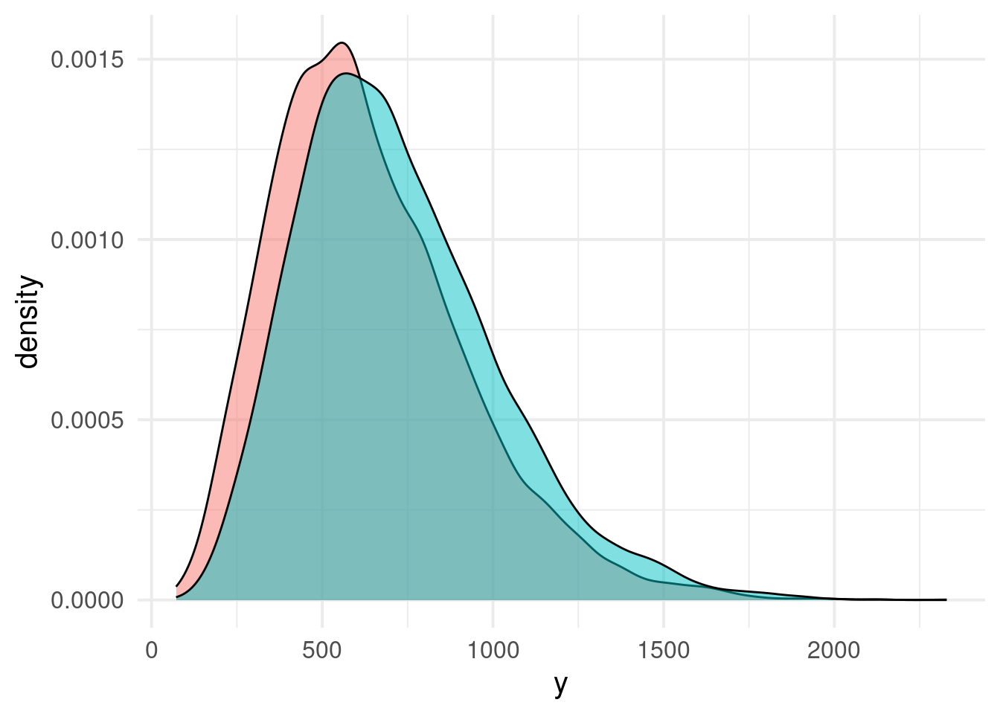
5 Meta-analysis and publication bias
6 Meta-analysis
6.1 Meta-analysis
- The meta-analysis is a statistical procedure to combine evidence from a group of studies.
. . .
- The idea is to “switch” the statistical unit from e.g., participants to studies
. . .
- The motto could be that (appropriately) combining similar studies with a similar aim is the best way to understand something about a phenomenon
6.2 Meta-analysis and Systematic Review
Usually a meta-analysis work follows these steps:
- Identify the research question: is the treatment x effective?, Does the experimental effect y exist?
- Define inclusion/exclusion criteria: From the research question (1), keep only e.g., randomized controlled trials, studies with healthy participants, etc.
- Systematically search for studies: Analyze the literature to find all relevant studies
- Extract relevant information: Read, extract and organize relevant information e.g., sample size, treatment type, age, etc.
- Summarize the results: Create a narrative (flowcharts, tables, etc.) summary of included studies. This is the Systematic review part.
- Choose an effect size: Choose a way to standardize the effect across included studies
- Meta-analysis model: Choose and implement a meta-analysis model
- Interpret and report results
6.3 Before the fun part…
- We are dealing only with the statistical part. The study selection, data extraction, studies evaluation etc. is another story
- The quality of the meta-analysis is the quality of included studies
. . .

6.4 Unstandardized effect sizes
The basic idea of an effect size is just using the raw measure. For example studies using reaction times we can calculate the difference between two conditions as \(\overline X_1 - \overline X_2\):
6.5 Unstandardized effect sizes
But another study (with the same research question) could use another measure, e.g., accuracy. We can still (not the best strategy but) compute the difference between the group means.

6.6 Unstandardized effect sizes
Clearly we cannot directly compare the two effects but we need to standardize the measure.
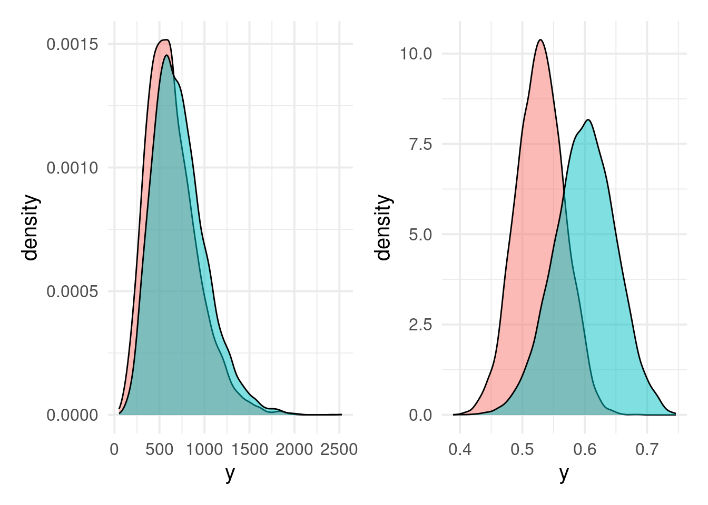
6.7 Standardized effect sizes
To compare results from different studies, we should use a common metric. Frequently meta-analysts use standardized effect sizes. For example the Pearson correlation or the Cohen’s \(d\).
\[ r = \frac{\sum{(x_i - \bar{x})(y_i - \bar{y})}}{\sqrt{\sum{(x_i - \bar{x})^2}\sum{(y_i - \bar{y})^2}}} \tag{6.1}\]
\[ d = \frac{\bar{x_1} - \bar{x_2}}{s_p} \]
\[ s_p = \sqrt{\frac{(n_1 - 1)s_1^2 + (n_2 - 1)s_2^2}{n_1 + n_2 - 2}} \]
6.8 Standardized effect sizes
The advantage of standardized effect size is that regardless the original variable, the interpretation and the scale is the same. For example the pearson correlation ranges between -1 and 1 and the Cohen’s \(d\) between \(- \infty\) and \(\infty\) and is interpreted as how many standard deviations the two groups/conditions differs.
Code
S <- matrix(c(1, 0.7, 0.7, 1), nrow = 2)
X <- MASS::mvrnorm(100, c(0, 2), S, empirical = TRUE)
par(mfrow = c(1,2))
plot(X, xlab = "x", ylab = "y", cex = 1.3, pch = 19,
cex.lab = 1.2, cex.axis = 1.2,
main = latex2exp::TeX(sprintf("$r = %.2f$", cor(X[, 1], X[, 2]))))
abline(lm(X[, 2] ~ X[, 1]), col = "firebrick", lwd = 2)
plot(density(X[, 1]), xlim = c(-5, 7), ylim = c(0, 0.5), col = "dodgerblue", lwd = 2,
main = latex2exp::TeX(sprintf("$d = %.2f$", lsr::cohensD(X[, 1], X[, 2]))),
xlab = "")
lines(density(X[, 2]), col = "firebrick", lwd = 2)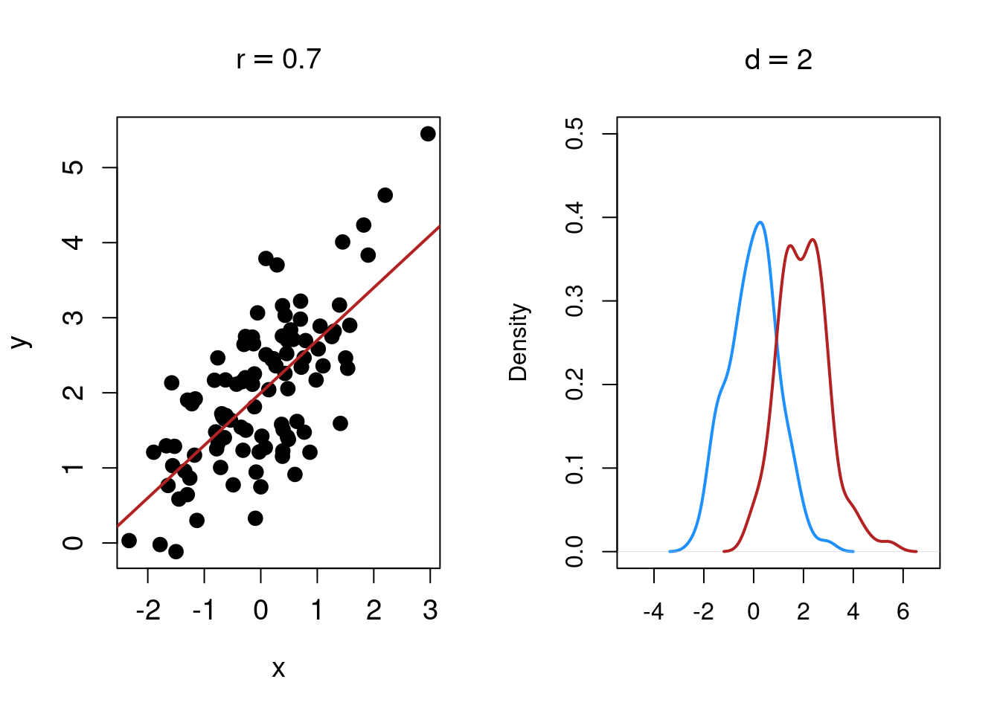
6.9 Standardized vs unstandardized
The main difference is (usually) the absence of a effect-size-variance relationship for unstandardized effects. For example, the variance of the difference between two groups is:
\[ V_d = \frac{s^2_1}{n_1} + \frac{s^2_2}{n_2} \tag{6.2}\]
While the variance of a Cohen’s \(d\) can be calculated as:
\[ V_d = \frac{n_1 + n_2}{n_1 n_2} + \frac{d^2}{2(n_1 + n_2)} \]
6.10 Standardized vs unstandardized
In this amazing blog post James Pustejovsky explained where the equations comes from. Basically, the \(\frac{n_1 + n_2}{n_1 n_2}\) term is the same as the \(\frac{s^2_1}{n_1} + \frac{s^2_2}{n_2}\) while the extra \(\frac{d^2}{2(n_1 + n_2)}\) is for the non-centrality induced by the standardized difference.
Code
n <- c(10, 50, 100)
d <- seq(0, 2, 0.001)
dd <- expand.grid(n = n, d = d)
dd$vumd <- with(dd, 1/n + 1/n)
dd$vd <- with(dd, (n + n) / (n * n) + d^2/(2 * (n + n)))
tidyr::pivot_longer(dd, 3:4) |>
ggplot(aes(x = d, y = value, color = name, linetype = factor(n))) +
geom_line() +
labs(linetype = "Sample Size",
color = NULL)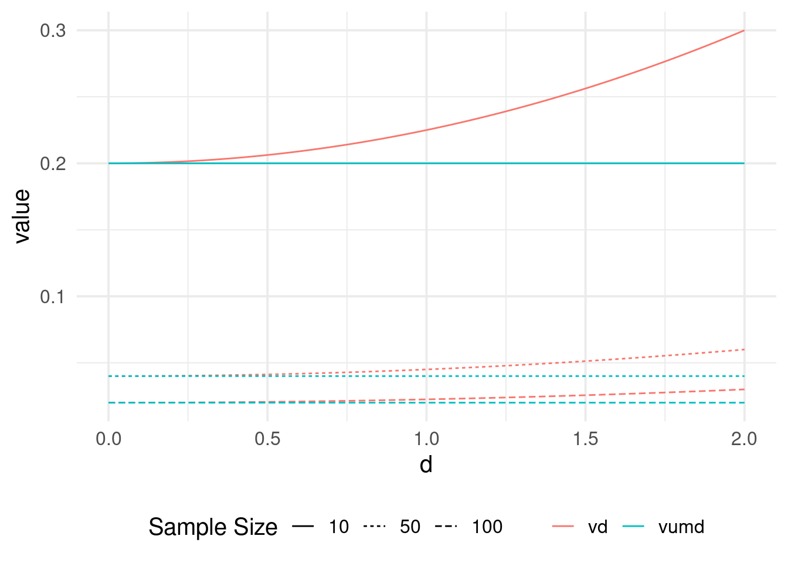
6.11 Effect size sampling variability
Crucially, we can calculate also the sampling variability of each effect size. The sampling variability is the precision of estimated value.
For example, there are multiple methods to estimate the Cohen’s \(d\) sampling variability. For example:
\[ V_d = \frac{n_1 + n_2}{n_1 n_2} + \frac{d^2}{2(n_1 + n_2)} \]
Each effect size has a specific formula for the sampling variability. The sample size is usually the most important information. Studies with high sample size have low sampling variability.
6.12 Effect size sampling variability
As the sample size grows and tends to infinity, the sampling variability approach zero.
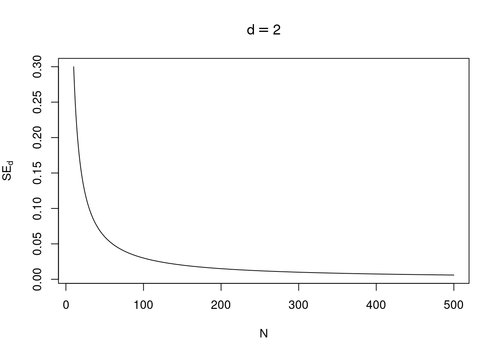
6.13 Unstandardized effect sizes
For the examples and plots I’m going to use simulated data. We simulate unstandardized effect sizes (UMD) because the computations are easier and the estimator is unbiased (e.g., Viechtbauer, 2005)
More specifically we simulate hypothetical studies where two independent groups are compared:
\[ \Delta = \overline{X_1} - \overline{X_2} \tag{6.3}\]
\[ SE_{\Delta} = \sqrt{\frac{s^2_1}{n_1} + \frac{s^2_2}{n_2}} \]
With \(X_{1_i} \sim \mathcal{N}(0, 1)\) and \(X_{2_i} \sim \mathcal{N}(\Delta, 1)\)
The main advantage is that, compared to standardized effect size, the sampling variability do not depends on the effect size itself, simplifying the computations.
7 Simulating a single study
7.1 Simulating a single study - UMD
To simulate a single study using a UMD we need to generate data according to the appropriate model. Here we have a difference between two groups. We can assume that the two groups comes from a normal distribution where group 1 \(g_1 \sim \mathcal{N}(0, 1)\) and group 2 \(g_2 \sim \mathcal{N}(D, 1)\) where \(D\) is the effect size. Then using Equations 6.2, 6.3 we can estimate the effect size and the variance.
7.2 Simulating a single study - UMD
For simplicity we can wrap everything within a function:
# default sd = 1
sim_umd <- function(n1, n2 = NULL, D, sd = 1){
if(is.null(n2)) n2 <- n1 # same to n1 if null
g1 <- rnorm(n1, mean = 0, sd = sd)
g2 <- rnorm(n2, mean = D, sd = sd)
yi <- mean(g2) - mean(g1)
vi <- var(g1)/n1 + var(g2)/n2
data.frame(yi, vi)
}
sim_umd(100, D = 0.5)
#> yi vi
#> 1 0.226548 0.01773798
sim_umd(50, D = 0.1)
#> yi vi
#> 1 -0.03957109 0.043428387.3 Simulating a single study - UMD
We can also generate a large number of studies and check the distribution of effect size and sampling variances. Note that the real \(D = 1\) and the real variance \(V_D = 1/50 + 1/50 = 0.04\)
studies <- replicate(1000, sim_umd(n1 = 50, D = 1), simplify = FALSE) # simplify = FALSE return a list
studies <- do.call(rbind, studies) # to dataframe
head(studies)#> yi vi
#> 1 0.5765818 0.03413209
#> 2 0.9926937 0.04289115
#> 3 1.1580807 0.04379710
#> 4 1.2464796 0.04524347
#> 5 0.8797195 0.03960170
#> 6 1.2336143 0.032668317.4 Simulating a single study - UMD
Then we can plot the sampling distributions:

7.5 Simulating a single study - SMD
The idea is the same when simulating a SDM but we need extra steps. Let’s adjust the previous function:
sim_smd <- function(n1, n2 = NULL, D){
if(is.null(n2)) n2 <- n1 # same to n1 if null
g1 <- rnorm(n1, mean = 0, sd = 1)
g2 <- rnorm(n2, mean = D, sd = 1)
v1 <- var(g1)
v2 <- var(g2)
# pooled standard deviation
sp <- sqrt((v1 * (n1 - 1) + v2 * (n2 - 1)) / (n1 + n2 - 2))
yi <- (mean(g2) - mean(g1)) / sp
vi <- (n1 + n2) / (n1 * n2) + yi^2/(2*(n1 + n2))
data.frame(yi, vi)
}7.6 Simulating a single study - SMD
When working with SMD, calculating the sampling variance can be challenging. Veroniki et al. (2016) identified 16 different estimators with different properties. Furthermore, it is a common practice to correct the SDM effect and variance using the Hedges’s correction (Hedges, 1989).
You can directly implement another equation for the sampling variance or the Hedges’s correction directly in the simulation function.
7.7 Simulating a single study - Pearson \(\rho\)
Another common effect size is the Pearson correlation coefficient \(\rho\) (and the estimate \(r\), see Equation 6.1). The variance of the correlation is calculated as:
\[ V_{r} = \frac{(1 - r^2)^2}{n - 1} \]
7.8 Simulating a single study - Pearson \(\rho\)
There is a huge dependency between \(r\) and it’s sampling variance (similar to the Cohen’s \(d\)):
7.9 Simulating a single study - Pearson \(\rho\)
For this reason the so-called Fisher’s \(z\) transformation is used to stabilize the relationship.
\[ z = \frac{\log{\frac{1 + r}{1 - r}}}{2} \]
\[ V_z = \frac{1}{n - 3} \]
Now the variance is completely independent from the correlation value.
7.10 Simulating a single study - Pearson \(\rho\)
This is the relationship between \(r\) and \(z\):
7.11 Simulating a single study - Pearson \(\rho\)
To simulate a study using correlations we can use the MASS::mvrnorm() function that can generate correlated data from a multivariate normal distribution.
sim_r <- function(n, r){
R <- r + diag(1 - r, nrow = 2) # 2 x 2 correlation matrix
X <- MASS::mvrnorm(n, mu = c(0, 0), Sigma = R) # the means are not relevant here
r <- cor(X)[1, 2] # extract correlation
vr <- (1 - r^2)^2 / (n - 1) # variance of r
yi <- log((1 + r)/(1 - r))/2 # fisher z
vi <- 1 / (n - 3) # fisher z variance
data.frame(yi, vi, r, vr) # including also the pearson correlation and variance
}7.12 Simulating a single study - Pearson \(\rho\)
sim_r(100, 0.5)
#> yi vi r vr
#> 1 0.6166665 0.01030928 0.5488028 0.004932759
sim_r(50, 0.8)
#> yi vi r vr
#> 1 1.282351 0.0212766 0.85711 0.001437086
# also here the sampling distributions
studies <- replicate(1000, sim_r(50, 0.7), simplify = FALSE)
studies <- do.call(rbind, studies)
summary(studies)
#> yi vi r vr
#> Min. :0.4456 Min. :0.02128 Min. :0.4182 Min. :0.001244
#> 1st Qu.:0.7792 1st Qu.:0.02128 1st Qu.:0.6522 1st Qu.:0.003917
#> Median :0.8736 Median :0.02128 Median :0.7032 Median :0.005215
#> Mean :0.8773 Mean :0.02128 Mean :0.6977 Mean :0.005469
#> 3rd Qu.:0.9720 3rd Qu.:0.02128 3rd Qu.:0.7496 3rd Qu.:0.006737
#> Max. :1.3241 Max. :0.02128 Max. :0.8678 Max. :0.0138937.13 More on effect sizes
The same logic can be applied to any situation. Just understand the data generation process, find the effect size equations and generate data.
-
Borenstein et al. (2009) for all effect sizes equations. Also with equations to convert among effect sizes (useful in real-world meta-analyses)
- the
metafor::escalc()function implements basically any effect size. You can see also the source code to see the actual R implementation. - Guide to effect sizes: a modern and complete overview of effect sizes
7.14 Simulating from sampling distributions [#extra]
The previous simulation examples are participant-level simulations. In fact we simulated \(n\) observations then we aggregated calculating the effect sizes.
. . .
This is the most flexible and general data simulation strategy but is computationally not efficient.
. . .
Another strategy individuate the exact effect size sampling distribution. Then we can sample directly from it. The downside is that we need to derive (or find) the equation.
7.15 Simulating from sampling distributions [#extra]
For example, when generating UMD we can simulate from the sampling distribution presented in Section 7.4.
\[ y_i \sim \mathcal{N}(\theta, \sqrt{\sigma^2_i}) \] \[ \sigma^2_i \sim \frac{\chi^2_{n_1 + n_2 - 2}}{n_1 + n_2 - 2} (\frac{1}{n_1} + \frac{1}{n_2}) \]
In this way we can sample \(k\) effects and sampling variances directly from the sampling distributions. Without generating data and then aggregate.
7.16 Simulating from sampling distributions [#extra]
We can again put everything within a function:
sim_k_umd <- function(k, D, n1, n2 = NULL){
if(is.null(n2)) n2 <- n1
yi <- rnorm(k, D, sqrt(1/n1 + 1/n2))
vi <- (rchisq(k, n1 + n2 - 2) / (n1 + n2 - 2)) * (1/n1 + 1/n2)
data.frame(yi, vi)
}7.17 Simulating from sampling distributions [#extra]
sim_k_umd(k = 10, D = 0.5, n1 = 50)
#> yi vi
#> 1 0.5738466 0.04315912
#> 2 0.6738248 0.03468778
#> 3 0.8680684 0.03492845
#> 4 0.3577568 0.04286838
#> 5 0.4943219 0.04206381
#> 6 0.8086167 0.04057567
#> 7 0.6781413 0.04862282
#> 8 0.7103435 0.04557039
#> 9 0.1040651 0.03661780
#> 10 0.3135765 0.038109907.18 Simulating from sampling distributions [#extra]
We can compare the two methods and see that we are sampling from the same data generation process.
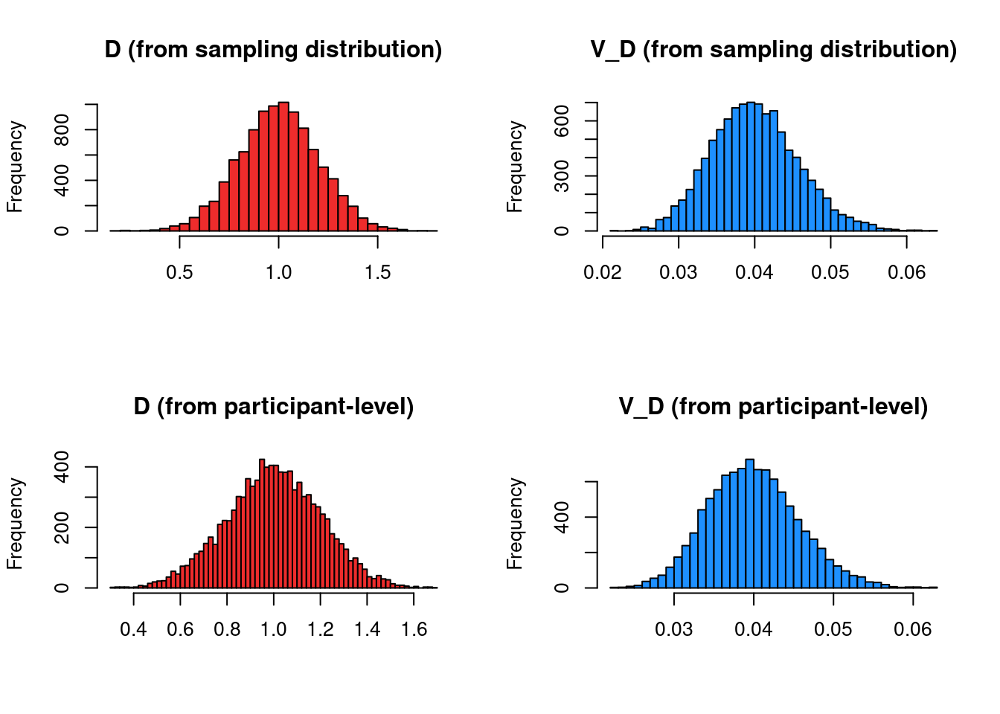
7.19 Simulating from sampling distributions [#extra]
The actual advantage is in terms of computational speed. To simulate \(k = 10\) studies for 1000 times (similar to a standard Monte Carlo simulation):
bench <- microbenchmark::microbenchmark(
sampling = sim_k_umd(k = 10, n1 = 50, D = 1),
participant = replicate(10, sim_umd(n1 = 50, D = 1)),
times = 1000
)
(bench <- summary(bench))
#> expr min lq mean median uq max neval cld
#> 1 sampling 121.088 127.500 135.7546 131.7425 138.205 320.583 1000 a
#> 2 participant 1533.724 1564.777 1662.7264 1597.1325 1614.285 6321.375 1000 b
bench$mean[2] / bench$mean[1] # faster
#> [1] 12.248038 Simulation setup
8.1 Notation
Meta-analysis notation is a little bit inconsistent in textbooks and papers. We define here some rules to simplify the work.
- \(k\) is the number of studies
- \(n_j\) is the sample size of the group \(j\) within a study
- \(y_i\) are the observed effect size included in the meta-analysis
- \(\sigma_i^2\) are the observed sampling variance of studies and \(\epsilon_i\) are the sampling errors
- \(\theta\) is the equal-effects parameter (see Equation 10.1)
- \(\delta_i\) is the random-effect (see Equation 11.2)
- \(\mu_\theta\) is the average effect of a random-effects model (see Equation 11.1)
- \(w_i\) are the meta-analysis weights
- \(\tau^2\) is the heterogeneity (see Equation 11.2)
- \(\Delta\) is the (generic) population effect size
- \(s_j^2\) is the variance of the group \(j\) within a study
8.2 Simulation setup
Given the introduction to effect sizes, from now we will simulate data using UMD and the individual-level data.
Basically we are simulating an effect size \(D\) coming from the comparison of two independent groups \(G_1\) and \(G_2\).
Each group is composed by \(n\) participants measured on a numerical outcome (e.g., reaction times)
8.3 Simulation setup
A more general, clear and realistic approach to simulate data is by generating \(k\) studies with same/different sample sizes and (later) true effect sizes.
k <- 10 # number of studies
n1 <- n2 <- 10 + rpois(k, 30 - 10) # sample size from poisson distribution with lambda 40 and minimum 10
D <- 0.5 # effect size
yi <- rep(NA, k)
vi <- rep(NA, k)
for(i in 1:k){
g1 <- rnorm(n1[i], 0, 1)
g2 <- rnorm(n2[i], D, 1)
yi[i] <- mean(g2) - mean(g1)
vi[i] <- var(g1)/n1[i] + var(g2)/n2[i]
}
sim <- data.frame(id = 1:k, yi, vi)
head(sim)
#> id yi vi
#> 1 1 0.4365388 0.04486757
#> 2 2 0.4558415 0.05654053
#> 3 3 0.7217043 0.04830127
#> 4 4 0.4447339 0.07858359
#> 5 5 0.2832747 0.06478037
#> 6 6 0.6719835 0.060953628.4 Simulation setup
We can again put everything within a function:
sim_studies <- function(k, es, n1, n2 = NULL){
if(length(n1) == 1) n1 <- rep(n1, k)
if(is.null(n2)) n2 <- n1
if(length(es) == 1) es <- rep(es, k)
yi <- rep(NA, k)
vi <- rep(NA, k)
for(i in 1:k){
g1 <- rnorm(n1[i], 0, 1)
g2 <- rnorm(n2[i], es[i], 1)
yi[i] <- mean(g2) - mean(g1)
vi[i] <- var(g1)/n1[i] + var(g2)/n2[i]
}
sim <- data.frame(id = 1:k, yi, vi, n1 = n1, n2 = n2)
# convert to escalc for using metafor methods
sim <- metafor::escalc(yi = yi, vi = vi, data = sim)
return(sim)
}8.5 Simulation setup - Disclaimer
The proposed simulation approach using a for loop and separated vectors. For the purpose of the workshop this is the best option. In real-world meta-analysis simulations you can choose a more functional approach starting from a simulation grid as data.frame and mapping the simulation functions.
For some examples see:
8.6 Simulation setup - Disclaimer
For a more extended overview of the simulation setup we have an entire paper. Supplementary materials (github.com/shared-research/simulating-meta-analysis) contains also more examples for complex (multilevel and multivariate models.)

9 Combining studies
9.1 Combining studies
Let’s imagine to have \(k = 10\) studies, a \(D = 0.5\) and heterogeneous sample sizes in each study.
. . .
What is the best way to combine the studies?
9.2 Combining studies
We can take the average effect size and considering it as a huge study. This can be considered the best way to combine the effects.
\[ \hat{D} = \frac{\sum^{k}_{i = 1} D_i}{k} \]
mean(dat$yi)
#> [1] 0.3721872. . .
It is appropriate? What do you think? Are we missing something?
9.3 Weighting studies
We are not considering that some studies, despite providing a similar effect size could give more information. An higher sample size (or lower sampling variance) produce a more reliable estimation.
. . .
Would you trust more a study with \(n = 100\) and \(D = 0.5\) or a study with \(n = 10\) and \(D = 0.5\)? The “meta-analysis” that we did before is completely ignoring this information.
9.4 Weighting studies
We need to find a value (called weight \(w_i\)) that allows assigning more trust to a study because it provide more information.
. . .
The simplest weights are just the sample size, but in practice we use the so-called inverse-variance weighting. We use the (inverse) of the sampling variance of the effect size to weight each study.
. . .
The basic version of a meta-analysis is just a weighted average:
\[ \overline D_w = \frac{\sum^k_{i = 1}{w_iD_i}}{\sum^k_{i = 1}{w_i}} \]
. . .
9.5 Weighting studies
Graphically, the two models can be represented in this way:
Code
dw <- weighted.mean(dat$yi, 1/dat$vi)
dunw <- mean(dat$yi)
unw_plot <- ggplot(dat, aes(x = yi, y = factor(id))) +
geom_point(size = 3) +
xlim(c(-0.5, 1.5)) +
geom_vline(xintercept = dunw) +
xlab(latex2exp::TeX("$y_i$")) +
ylab("Study") +
theme_minimal(15) +
annotate("label", x = 0.5, y = k + 0.4, label = latex2exp::TeX(sprintf("$\\bar{D} = %.2f$", dunw))) +
geom_label(aes(x = 1, y = id, label = paste0("n = ", n1)))
w_plot <- ggplot(dat, aes(x = yi, y = factor(id))) +
geom_point(aes(size = 1/vi),
show.legend = FALSE) +
xlim(c(-0.5, 1.5)) +
geom_vline(xintercept = dw) +
xlab(latex2exp::TeX("$y_i$")) +
ylab("Study") +
theme_minimal(15) +
annotate("label", x = 0.5, y = k + 0.4, label = latex2exp::TeX(sprintf("$\\bar{D}_w = %.2f$", dw))) +
geom_label(aes(x = 1, y = id, label = paste0("n = ", n1)))
unw_plot + w_plot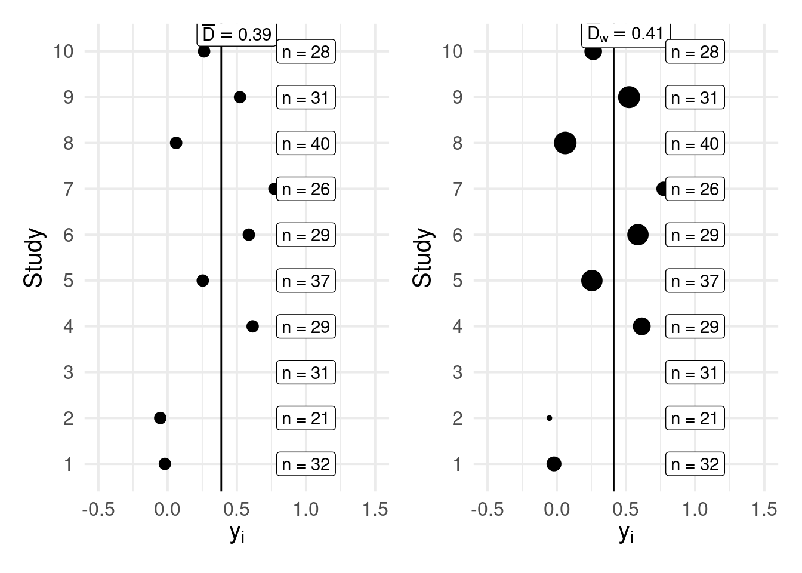
10 Equal-effects (EE) meta-analysis
10.1 EE meta-analysis
What we did in the last example (the weighted mean) is the exactly a meta-analysis model called equal-effects (or less precisely fixed-effect). The assumptions are very simple:
- there is a unique, true effect size to estimate \(\theta\)
- each study is a more or less precise estimate of \(\theta\)
- there is no TRUE variability among studies. The observed variability is due to studies that are imprecise (i.e., sampling error)
- assuming that each study has a very large sample size, the observed variability is close to zero.
10.2 EE meta-analysis, formally
\[ y_i = \theta + \epsilon_i \tag{10.1}\]
\[ \epsilon_i \sim \mathcal{N}(0, \sigma^2_i) \tag{10.2}\]
Where \(\sigma^2_i\) is the vector of sampling variabilities of \(k\) studies. This is a standard linear model but with heterogeneous sampling variances.
10.3 EE meta-analysis
10.4 Simulating an EE model
What we were doing with the sim_studies() function so far was simulating an EE model. In fact, there were a single \(\theta\) parameter and the observed variability was a function of the rnorm() randomness.
Based on previous assumptions and thinking a little bit, what could be the result of simulating studies with a very large \(n\)?
. . .
10.5 Simulating an EE modelm
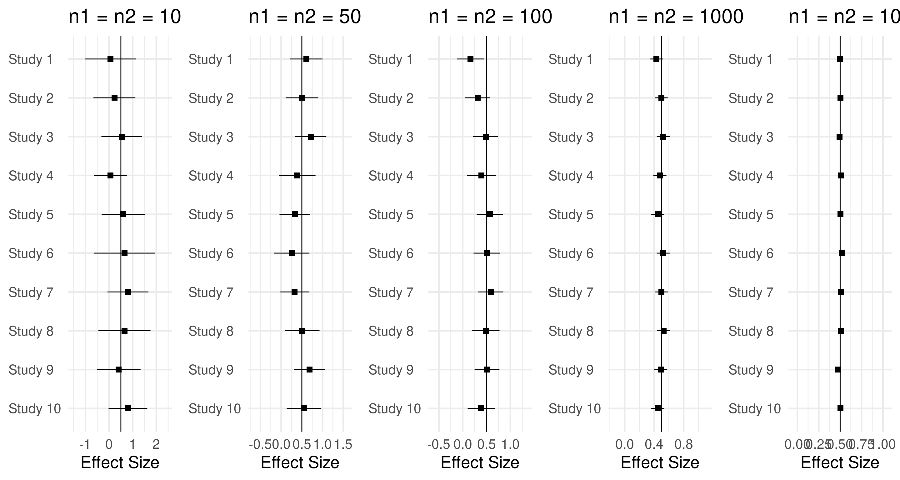
10.6 Simulating an EE model
Formulating the model as a intercept-only regression (see Equations Equation 10.1 and Equation 10.2) we can generate data directly:
As we did for the aggregated data approach. Clearly we need to simulate also the vi vector from the appropriate distribution. Given that we simulated data starting from the participant-level the uncertainty of yi and vi is already included.
10.7 Fitting an EE model
The model can be fitted using the metafor::rma() function, with method = "EE"1.
theta <- 0.5
k <- 15
n <- 10 + rpois(k, 30 - 10)
dat <- sim_studies(k = k, es = theta, n1 = n)
fit <- rma(yi, vi, data = dat, method = "EE")
summary(fit)
#>
#> Equal-Effects Model (k = 15)
#>
#> logLik deviance AIC BIC AICc
#> -2.7508 18.5609 7.5016 8.2097 7.8093
#>
#> I^2 (total heterogeneity / total variability): 24.57%
#> H^2 (total variability / sampling variability): 1.33
#>
#> Test for Heterogeneity:
#> Q(df = 14) = 18.5609, p-val = 0.1824
#>
#> Model Results:
#>
#> estimate se zval pval ci.lb ci.ub
#> 0.4242 0.0663 6.3950 <.0001 0.2942 0.5541 ***
#>
#> ---
#> Signif. codes: 0 '***' 0.001 '**' 0.01 '*' 0.05 '.' 0.1 ' ' 110.8 Interpreting an EE model
- The first section (
logLik,deviance, etc.) presents some general model statistics and information criteria - The \(I^2\) and \(H^2\) are statistics evaluating the observed heterogeneity (see next slides)
- The
Test of Heterogeneitysection presents the test of the \(Q\) statistics for the observed heterogeneity (see next slides) - The
Model Resultssection presents the estimation of the \(\theta\) parameter along with the standard error and the Wald \(z\) test (\(H_0: \theta = 0\))
The metafor package has a several well documented functions to calculate and plot model results, residuals analysis etc.
10.9 Interpreting an EE model
plot(fit) # general plots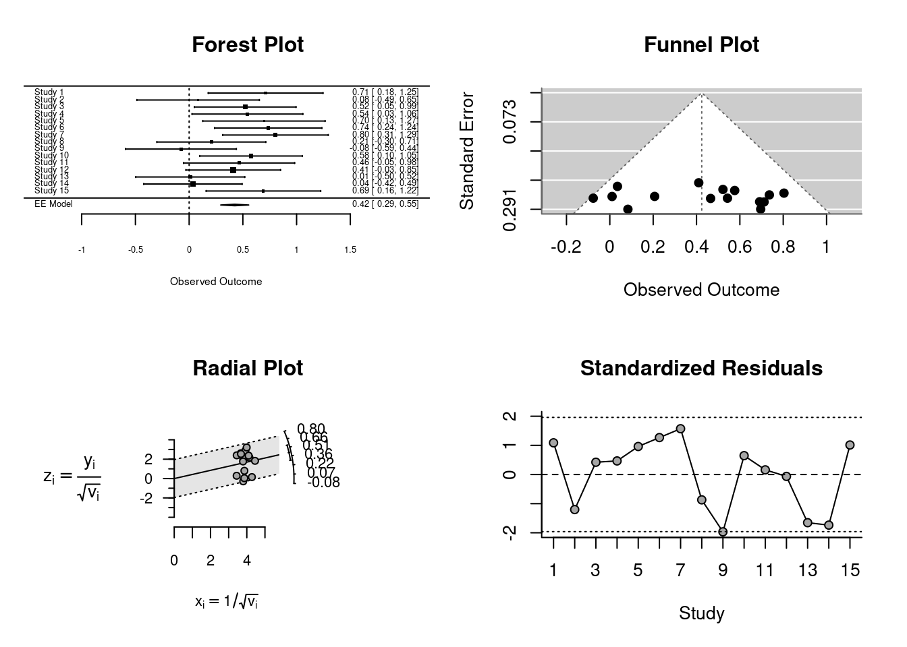
10.10 Interpreting an EE Model
The main function for plotting model results is the forest() function that produce the forest plot.
forest(fit)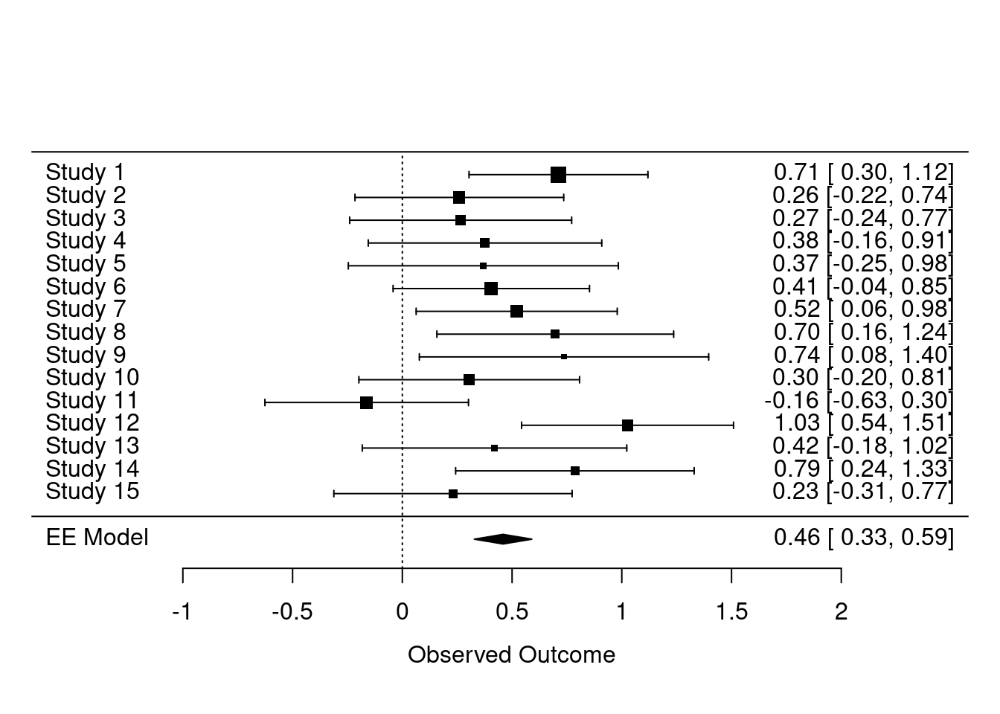
10.11 Interpreting an EE Model
We did not introduced the concept of heterogeneity, but the \(I^2\), \(H^2\) and \(Q\) statistics basically evaluate if the observed heterogeneity should be attributed to sampling variability (uncertainty in estimating \(\theta\) because we have a limited \(k\) and \(n\)) or sampling variability plus other sources of heterogeneity.
10.12 EE model as a weighted Average
Formally \(\theta\) is estimated as (see Borenstein et al., 2009, p. 66)
\[ \hat{\theta} = \frac{\sum^k_{i = 1}{w_iy_i}}{\sum^k_{i = 1}{w_i}}; \;\;\; w_i = \frac{1}{\sigma^2_i} \]
\[ SE_{\theta} = \frac{1}{\sum^k_{i = 1}{w_i}} \]
11 Random-effects (RE) meta-analysis
11.1 Are the EE assumptions realistic?
The EE model is appropriate if our studies are somehow exact replications of the exact same effect. We are assuming that there is no real variability.
. . .
However, meta-analysis rarely report the results of \(k\) exact replicates. It is more common to include studies answering the same research question but with different methods, participants, etc.
. . .
- people with different ages or other participant-level differences
- different methodology
- …
11.2 Are the EE assumptions realistic?
. . .
If we relax the previous assumption we are able to combine studies that are not exact replications.
. . .
Thus the real effect \(\theta\) is no longer a single true value but can be larger or smaller in some conditions.
. . .
In other terms we are assuming that there could be some variability (i.e., heterogeneity) among studies that is independent from the sample size. Even with studies with \(\lim_{n\to\infty}\) the observed variability is not zero.
11.3 Random-effects model (RE)
We can extend the EE model including another source of variability, \(\tau^2\). \(\tau^2\) is the true heterogeneity among studies caused by methdological differences or intrisic variability in the phenomenon.
Formally we can extend Equation 10.1 as: \[ y_i = \mu_{\theta} + \delta_i + \epsilon_i \tag{11.1}\]
\[ \delta_i \sim \mathcal{N}(0, \tau^2) \tag{11.2}\]
\[ \epsilon_i \sim \mathcal{N}(0, \sigma^2_i) \]
Where \(\mu_{\theta}\) is the average effect size and \(\delta_i\) is the study-specific deviation from the average effect (regulated by \(\tau^2\)). Clearly each study specific effect is \(\theta_i = \mu_{\theta} + \delta_i\).
11.4 RE model
11.5 RE model estimation
Given that we extended the EE model equation. Also the estimation of the average effect need to be extended. Basically the RE is still a weighted average but weights need to include also \(\tau^2\).
\[ \overline y = \frac{\sum_{i = 1}^k y_iw^*_i}{\sum_{i = 1}^k w^*_i} \tag{11.3}\]
\[ w^*_i = \frac{1}{\sigma^2_i + \tau^2} \tag{11.4}\]
The weights are different compared to the EE model. Extremely precise/imprecise studies will have less impact in the RE model.
11.6 RE vs EE model
The crucial difference with the EE model is that even with large \(n\), only the \(\mu_{\theta} + \delta_i\) are estimated (almost) without error. As long \(\tau^2 \neq 0\) there will be variability in the effect sizes.
11.7 Simulating a RE Model
To simulate the RE model we simply need to include \(\tau^2\) in the EE model simulation.
k <- 15 # number of studies
mu <- 0.5 # average effect
tau2 <- 0.1 # heterogeneity
n <- 10 + rpois(k, 30 - 10) # sample size
deltai <- rnorm(k, 0, sqrt(tau2)) # random-effects
thetai <- mu + deltai # true study effect
dat <- sim_studies(k = k, es = thetai, n1 = n)
head(dat)
#>
#> id yi vi n1 n2
#> 1 1 0.8142 0.0532 31 31
#> 2 2 0.1607 0.0837 28 28
#> 3 3 0.9681 0.0720 31 31
#> 4 4 0.3218 0.0557 32 32
#> 5 5 0.5520 0.0796 28 28
#> 6 6 0.7136 0.0447 32 3211.8 Simulating a RE model
Again, we can put everything within a function expanding the previous sim_studies() by including \(\tau^2\):
sim_studies <- function(k, es, tau2 = 0, n1, n2 = NULL, add = NULL){
if(length(n1) == 1) n1 <- rep(n1, k)
if(is.null(n2)) n2 <- n1
if(length(es) == 1) es <- rep(es, k)
yi <- rep(NA, k)
vi <- rep(NA, k)
# random effects
deltai <- rnorm(k, 0, sqrt(tau2))
for(i in 1:k){
g1 <- rnorm(n1[i], 0, 1)
g2 <- rnorm(n2[i], es[i] + deltai[i], 1)
yi[i] <- mean(g2) - mean(g1)
vi[i] <- var(g1)/n1[i] + var(g2)/n2[i]
}
sim <- data.frame(id = 1:k, yi, vi, n1 = n1, n2 = n2)
if(!is.null(add)){
sim <- cbind(sim, add)
}
# convert to escalc for using metafor methods
sim <- metafor::escalc(yi = yi, vi = vi, data = sim)
return(sim)
}11.9 Simulating a RE model
The data are similar to the EE simulation but we have an extra source of heterogeneity.
Code
dat |>
summary() |>
qforest()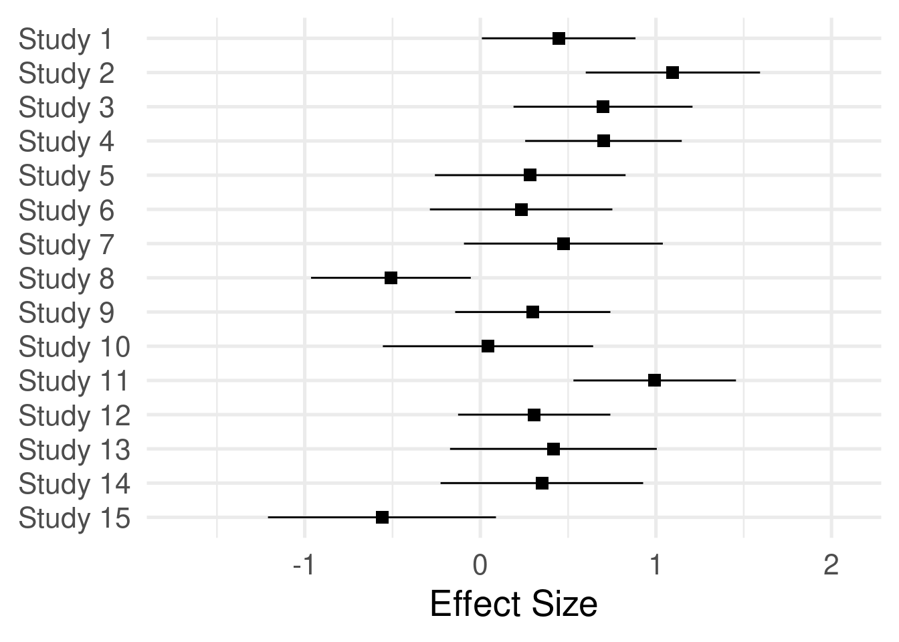
11.10 Simulating a RE model
To see the actual impact of \(\tau^2\) we can follow the same approach of Section 10.5 thus using a large \(n\). The sampling variance vi of each study is basically 0.
# ... other parameters as before
n <- 1e4
deltai <- rnorm(k, 0, sqrt(tau2)) # random-effects
thetai <- mu + deltai # true study effect
dat <- sim_studies(k = k, es = thetai, n1 = n)
# or equivalently
# dat <- sim_studies(k = k, es = mu, tau2 = tau2, n1 = n)
head(dat)
#>
#> id yi vi n1 n2
#> 1 1 0.5101 0.0002 10000 10000
#> 2 2 0.3129 0.0002 10000 10000
#> 3 3 0.2215 0.0002 10000 10000
#> 4 4 0.2343 0.0002 10000 10000
#> 5 5 0.4691 0.0002 10000 10000
#> 6 6 0.6939 0.0002 10000 1000011.11 Simulating a RE Model
Clearly, compared to Section 10.5, even with large \(n\) the variability is not reduced because \(\tau^2 \neq 0\). As \(\tau^2\) approach zero the EE and RE models are similar.
Code
dat |>
summary() |>
qforest()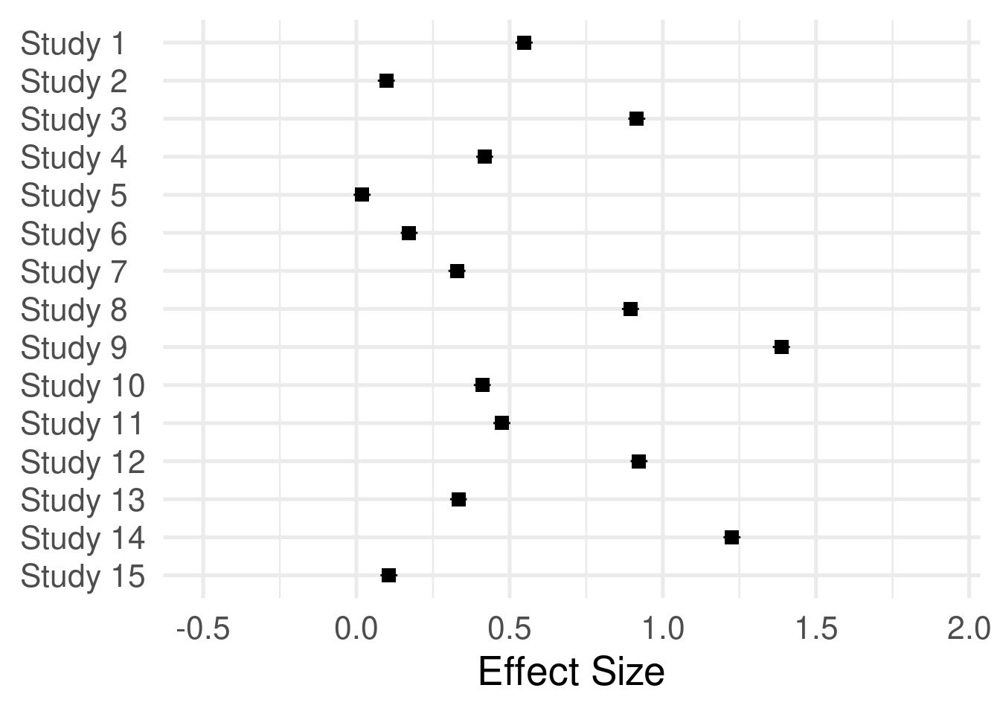
11.12 RE model estimation
Given that we extended the EE model equation. Also the estimation of the average effect need to be extended. Basically the RE is still a weighted average but weights need to include also \(\tau^2\).
\[ \overline y = \frac{\sum_{i = 1}^k y_iw^*_i}{\sum_{i = 1}^k w^*_i} \tag{11.5}\]
\[ w^*_i = \frac{1}{\sigma^2_i + \tau^2} \tag{11.6}\]
The weights are different compared to the EE model. Extremely precise/imprecise studies will have less impact in the RE model.
11.13 Fitting a RE model
In R we can use the metafor::rma() function using the method = "REML".
fit <- rma(yi, vi, data = dat, method = "REML")
summary(fit)
#>
#> Random-Effects Model (k = 15; tau^2 estimator: REML)
#>
#> logLik deviance AIC BIC AICc
#> -3.2908 6.5816 10.5816 11.8597 11.6725
#>
#> tau^2 (estimated amount of total heterogeneity): 0.0935 (SE = 0.0354)
#> tau (square root of estimated tau^2 value): 0.3058
#> I^2 (total heterogeneity / total variability): 99.79%
#> H^2 (total variability / sampling variability): 469.23
#>
#> Test for Heterogeneity:
#> Q(df = 14) = 6580.9456, p-val < .0001
#>
#> Model Results:
#>
#> estimate se zval pval ci.lb ci.ub
#> 0.5637 0.0790 7.1325 <.0001 0.4088 0.7186 ***
#>
#> ---
#> Signif. codes: 0 '***' 0.001 '**' 0.01 '*' 0.05 '.' 0.1 ' ' 111.14 Intepreting the RE model
The model output is quite similar to the EE model and also the intepretation is similar.
The only extra section is tau^2/tau that is the estimation of the between-study heterogeneity.
summary(fit)
#>
#> Random-Effects Model (k = 15; tau^2 estimator: REML)
#>
#> logLik deviance AIC BIC AICc
#> -3.2908 6.5816 10.5816 11.8597 11.6725
#>
#> tau^2 (estimated amount of total heterogeneity): 0.0935 (SE = 0.0354)
#> tau (square root of estimated tau^2 value): 0.3058
#> I^2 (total heterogeneity / total variability): 99.79%
#> H^2 (total variability / sampling variability): 469.23
#>
#> Test for Heterogeneity:
#> Q(df = 14) = 6580.9456, p-val < .0001
#>
#> Model Results:
#>
#> estimate se zval pval ci.lb ci.ub
#> 0.5637 0.0790 7.1325 <.0001 0.4088 0.7186 ***
#>
#> ---
#> Signif. codes: 0 '***' 0.001 '**' 0.01 '*' 0.05 '.' 0.1 ' ' 111.15 Estimating \(\tau^2\)

11.16 Estimating \(\tau^2\)
The Restricted Maximum Likelihood (REML) estimator is considered one of the best. We can compare the results using the all_rma() custom function that tests all the estimators2.
fitl <- all_rma(fit)
round(filor::compare_rma(fitlist = fitl), 3)
#> DL HE HS HSk SJ ML REML EB PM PMM
#> b 0.564 0.564 0.564 0.564 0.564 0.564 0.564 0.564 0.564 0.564
#> se 0.079 0.079 0.076 0.079 0.079 0.076 0.079 0.079 0.079 0.081
#> zval 7.126 7.133 7.376 7.126 7.133 7.383 7.132 7.133 7.133 6.962
#> pval 0.000 0.000 0.000 0.000 0.000 0.000 0.000 0.000 0.000 0.000
#> ci.lb 0.409 0.409 0.414 0.409 0.409 0.414 0.409 0.409 0.409 0.405
#> ci.ub 0.719 0.719 0.713 0.719 0.719 0.713 0.719 0.719 0.719 0.722
#> I2 99.787 99.787 99.772 99.787 99.787 99.772 99.787 99.787 99.787 99.797
#> tau2 0.094 0.093 0.087 0.094 0.093 0.087 0.093 0.093 0.093 0.09811.17 Intepreting heterogeneity \(\tau^2\)
Looking at Equation 11.2, \(\tau^2\) is essentially the variance of the random-effect. This means that we can intepret it as the variability (or the standard deviation) of the true effect size distribution.
Code
tau2s <- c(0.01, 0.05, 0.1, 0.2)
tau2s_t <- latex2exp::TeX(sprintf("$\\tau^2 = %.2f$", tau2s))
par(mfrow = c(1, 3))
hist(rnorm(1e4, 0, sqrt(tau2s[1])), xlim = c(-2, 2), xlab = latex2exp::TeX("$y_i$"), main = tau2s_t[1], probability = TRUE, ylim = c(0, 4.5), col = "dodgerblue")
hist(rnorm(1e4, 0, sqrt(tau2s[2])), xlim = c(-2, 2), xlab = latex2exp::TeX("$y_i$"), main = tau2s_t[2], probability = TRUE, ylim = c(0, 4.5), col = "dodgerblue")
#hist(rnorm(1e4, 0, sqrt(tau2s[3])), xlim = c(-2, 2), xlab = latex2exp::TeX("$y_i$"), main = tau2s_t[3], probability = TRUE, ylim = c(0, 5))
hist(rnorm(1e4, 0, sqrt(tau2s[4])), xlim = c(-2, 2), xlab = latex2exp::TeX("$y_i$"), main = tau2s_t[4], probability = TRUE, ylim = c(0, 4.5), col = "dodgerblue")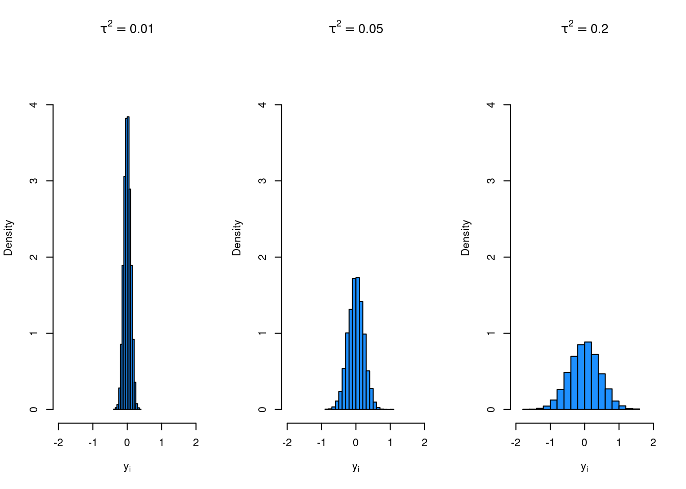
11.18 Intepreting \(\tau^2\)
As in the previus plot we can assume \(n = \infty\) and generate true effects from Equation 11.2. In this way we understand the impact of assuming (or estimating) a certain \(\tau^2\).
For example, a \(\tau = 0.2\) and a \(\mu_{\theta} = 0.5\), 50% of the true effects ranged between:
11.19 The \(Q\) Statistics3
The Q statistics is used to make inference on the heterogeneity. Can be considered as a weighted sum of squares:
\[ Q = \sum^k_{i = 1}w_i(y_i - \hat \mu)^2 \]
Where \(\hat \mu\) is EE estimation (regardless if \(\tau^2 \neq 0\)) and \(w_i\) are the inverse-variance weights. Note that in the case of \(w_1 = w_2 ... = w_i\), Q is just a standard sum of squares (or deviance).
11.20 The \(Q\) Statistics
- Given that we are summing up squared distances, they should be approximately \(\chi^2\) with \(df = k - 1\). In case of no heterogeneity (\(\tau^2 = 0\)) the observed variability is only caused by sampling error and the expectd value of the \(\chi^2\) is just the degrees of freedom (\(df = k - 1\)).
- In case of \(\tau^2 \neq 0\), the expected value is \(k - 1 + \lambda\) where \(\lambda\) is a non-centrality parameter.
- In other terms, if the expected value of \(Q\) exceed the expected value assuming no heterogeneity, we have evidence that \(\tau^2 \neq 0\).
11.21 The \(Q\) Statistics
Let’s try a more practical approach. We simulate a lot of meta-analysis with and without heterogeneity and we check the Q statistics.
Code
get_Q <- function(yi, vi){
wi <- 1/vi
theta_ee <- weighted.mean(yi, wi)
sum(wi*(yi - theta_ee)^2)
}
k <- 30
n <- 30
tau2 <- 0.1
nsim <- 1e4
Qs_tau2_0 <- rep(0, nsim)
Qs_tau2 <- rep(0, nsim)
res2_tau2_0 <- vector("list", nsim)
res2_tau2 <- vector("list", nsim)
for(i in 1:nsim){
dat_tau2_0 <- sim_studies(k = 30, es = 0.5, tau2 = 0, n1 = n)
dat_tau2 <- sim_studies(k = 30, es = 0.5, tau2 = tau2, n1 = n)
theta_ee_tau2_0 <- weighted.mean(dat_tau2_0$yi, 1/dat_tau2_0$vi)
theta_ee <- weighted.mean(dat_tau2$yi, 1/dat_tau2$vi)
res2_tau2_0[[i]] <- dat_tau2_0$yi - theta_ee_tau2_0
res2_tau2[[i]] <- dat_tau2$yi - theta_ee
Qs_tau2_0[i] <- get_Q(dat_tau2_0$yi, dat_tau2_0$vi)
Qs_tau2[i] <- get_Q(dat_tau2$yi, dat_tau2$vi)
}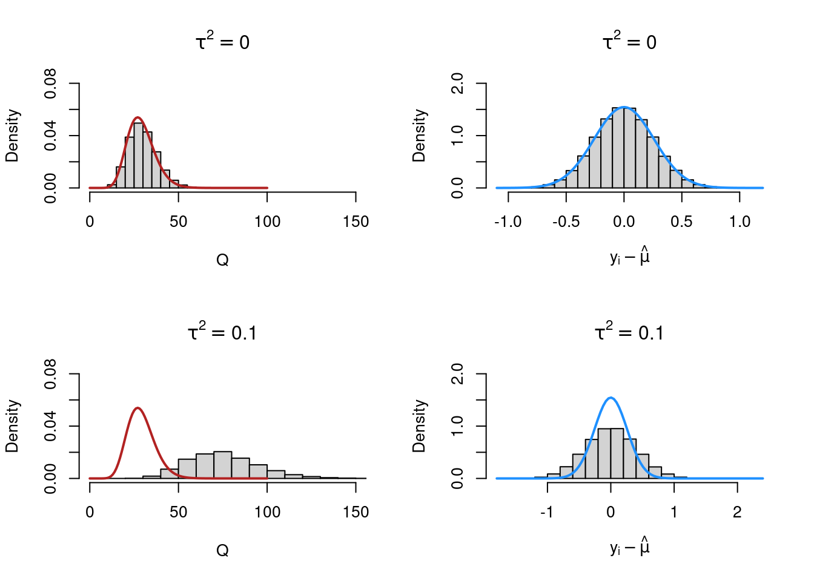
11.22 The \(Q\) Statistics
Let’s try a more practical approach. We simulate a lot of meta-analysis with and without heterogeneity and we check the Q statistics.
. . .
- clearly, in the presence of heterogeneity, the expected value of the Q statistics is higher (due to \(\lambda \neq 0\)) and also residuals are larger (the \(\chi^2\) is just a sum of squared weighted residuals)
. . .
- we can calculate a p-value for deviation from the \(\tau^2 = 0\) case as evidence agaist the absence of heterogeneity
11.23 \(I^2\) (Higgins & Thompson, 2002)
We have two sources of variability in a random-effects meta-analysis, the sampling variability \(\sigma_i^2\) and true heterogeneity \(\tau^2\). We can use the \(I^2\) to express the interplay between the two. \[ I^2 = 100\% \times \frac{\hat{\tau}^2}{\hat{\tau}^2 + \tilde{v}} \tag{11.7}\]
\[ \tilde{v} = \frac{(k-1) \sum w_i}{(\sum w_i)^2 - \sum w_i^2}, \]
Where \(\tilde{v}\) is the typical sampling variability. \(I^2\) is intepreted as the proportion of total variability due to real heterogeneity (i.e., \(\tau^2\))
11.24 \(I^2\) (Higgins & Thompson, 2002)4
Note that we can have the same \(I^2\) in two completely different meta-analysis. An high \(I^2\) does not represent high heterogeneity. Let’s assume to have two meta-analysis with \(k\) studies and small (\(n = 30\)) vs large (\(n = 500\)) sample sizes.
Let’s solve Equation 11.7 for \(\tau^2\) (using filor::tau2_from_I2()) and we found that the same \(I^2\) can be obtained with two completely different \(\tau^2\) values:
n_1 <- 30
vi_1 <- 1/n_1 + 1/n_1
tau2_1 <- filor::tau2_from_I2(0.8, vi_1)
tau2_1
#> [1] 0.2666667
n_2 <- 500
vi_2 <- 1/n_2 + 1/n_2
tau2_2 <- filor::tau2_from_I2(0.8, vi_2)
tau2_2
#> [1] 0.01611.25 \(I^2\) (Higgins & Thompson, 2002)
n_1 <- 30
vi_1 <- 1/n_1 + 1/n_1
tau2_1 <- filor::tau2_from_I2(0.8, vi_1)
tau2_1
#> [1] 0.2666667
n_2 <- 500
vi_2 <- 1/n_2 + 1/n_2
tau2_2 <- filor::tau2_from_I2(0.8, vi_2)
tau2_2
#> [1] 0.016. . .
In other terms, the \(I^2\) can be considered a good index of heterogeneity only when the total variance (\(\tilde{v} + \tau^2\)) is similar.
11.26 What about \(\tilde{v}\)?
\(\tilde{v}\) is considered the “typical” within-study variability (see https://www.metafor-project.org/doku.php/tips:i2_multilevel_multivariate). There are different estimators but Equation 11.8 is the most common.
\[ \tilde{v} = \frac{(k-1) \sum w_i}{(\sum w_i)^2 - \sum w_i^2} \tag{11.8}\]
11.27 What about \(\tilde{v}\)?
In the hypothetical case where \(\sigma^2_1 = \dots = \sigma^2_k\), \(\tilde{v}\) is just \(\sigma^2\). This fact is commonly used to calculate the statistical power analytically (Borenstein et al., 2009, Chapter 29).
vtilde <- function(wi){
k <- length(wi)
(k - 1) * sum(wi) / (sum(wi)^2 - sum(wi^2))
}
k <- 20
# same vi
vi <- rep((1/30 + 1/30), k)
head(vi)
#> [1] 0.06666667 0.06666667 0.06666667 0.06666667 0.06666667 0.06666667
vtilde(1/vi)
#> [1] 0.06666667
# heterogeneous vi
n <- 10 + rpois(k, 30 - 10)
vi <- sim_vi(k = k, n1 = n)
vtilde(1/vi)
#> [1] 0.0638907511.28 What about \(\tilde{v}\)?
Using simulations we can see that \(\tilde{v}\) with heterogenenous variances (i.e., sample sizes in this case) can be approximated by the central tendency of the sample size distribution. Note that we are fixing \(\sigma^2 = 1\) thus we are not including uncertainty.
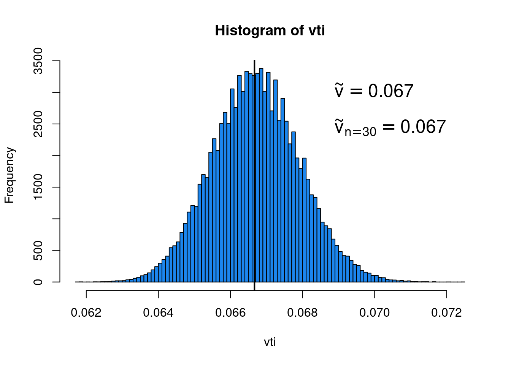
11.29 \(H^2\)
The \(H^2\) is an alternative index of heterogeneity. Is calculated as:
\[ H^2 = \frac{Q}{k - 1} \]
We defined \(Q\) as the weighted sum of squares representing the total variability. \(k - 1\) is the expected value of the \(\chi^2\) statistics (i.e., sum of squares) when \(\tau^2 = 0\) (or \(\lambda = 0\)).
Thus \(H^2\) is the ratio between total heterogeneity and sampling variability. Higher \(H^2\) is associated with higher heterogeneity relative to the sampling variability. \(H^2\) is not a measure of absolute heterogeneity.
11.30 \(H^2\)
When we are fitting a RE model, the \(I^2\) and \(H^2\) equations are slightly different (Higgins & Thompson, 2002). See also the metafor source code.
k <- 100
mu <- 0.5
tau2 <- 0.1
n <- 30
dat <- sim_studies(k = k, es = mu, tau2 = tau2, n1 = n)
fit_re <- rma(yi, vi, data = dat, method = "REML")
fit_ee <- rma(yi, vi, data = dat, method = "EE")
# H2 with EE model
theta_ee <- fit_ee$b[[1]] # weighted.mean(dat$yi, 1/dat$vi)
wi <- 1/dat$vi
Q <- with(dat, sum((1/vi)*(yi - theta_ee)^2))
c(Q, fit_ee$QE) # same
#> [1] 350.1654 350.1654
c(H2 = fit_ee$QE / (fit_ee$k - fit_ee$p), H2_model = fit_ee$H2) # same
#> H2 H2_model
#> 3.537024 3.537024
# H2 with RE model
vt <- vtilde(1/dat$vi)
c(H2 = fit_re$tau2 / vt + 1, H2_model = fit_re$H2) # same
#> H2 H2_model
#> 3.495119 3.49511911.31 Confidence Intervals
What is reported in the model summary as ci.lb and ci.ub refers to the 95% confidence interval representing the uncertainty in estimating the effect (or a meta-regression parameter).
Without looking at the equations, let’s try to implement this idea using simulations.
- choose \(k\), \(\tau^2\) and \(n\)
- simulate data (several times) accordingly and fit the RE model
- extract the estimated effect size
- compare the simulated sampling distribution with the analytical result
11.32 Confidence Intervals
k <- 30
n <- 30
tau2 <- 0.05
mu <- 0.5
nsim <- 5e3
# true parameters (see Borenstein, 2009; Chapter 29)
vt <- 1/n + 1/n
vs <- (vt + tau2)/ k
se <- sqrt(vs)
mui <- rep(NA, nsim)
for(i in 1:nsim){
dat <- sim_studies(k = k, es = mu, tau2 = tau2, n1 = n)
fit <- rma(yi, vi, data = dat)
mui[i] <- coef(fit)[1]
}
# standard error
c(simulated = sd(mui), analytical = fit$se)
#> simulated analytical
#> 0.06322640 0.06508356
# confidence interval
rbind(
"simulated" = quantile(mui, c(0.05, 0.975)),
"analytical" = c("2.5%" = fit$ci.lb, "97.5%" = fit$ci.ub)
)
#> 5% 97.5%
#> simulated 0.3958958 0.6226868
#> analytical 0.3721610 0.627283811.33 Confidence Intervals

11.34 Confidence Intervals
Now the equation for the 95% confidence interval should be more clear. The standard error is a function of the within study sampling variances (depending mainly on \(n\)), \(\tau^2\) and \(k\). As we increase \(k\) the standard error tends towards zero.
\[ CI = \hat \mu_{\theta} \pm z SE_{\mu_{\theta}} \]
\[ SE_{\mu_{\theta}} = \sqrt{\frac{1}{\sum^{k}_{i = 1}w^{\star}_i}} \]
\[ w^{\star}_i = \frac{1}{\sigma^2_i + \tau^2} \]
11.35 Confidence Intervals
We can also see it analytically, there is a huge impact of \(k\).
Code
# true parameters (see Borenstein, 2009; Chapter 29)
vt <- 1/n + 1/n
vs <- (vt + tau2)/ k
se <- sqrt(vs)
k <- c(10, 50, 100, 500, 1000, 5000)
n <- c(10, 50, 100, 500, 1000, 5000)
tau2 <- c(0, 0.05, 0.1, 0.2)
dd <- expand.grid(k = k, n = n, tau2 = tau2)
dd$vt <- with(dd, 1/n + 1/n)
dd$vs <- with(dd, (vt + tau2)/ k)
dd$se <- sqrt(dd$vs)
dd$k <- as_tex_label(dd$k, "$k = %s$")
ggplot(dd, aes(x = n, y = se, color = factor(tau2))) +
geom_line() +
facet_wrap(~k, labeller = label_parsed) +
labs(color = latex2exp::TeX("\\tau^2")) +
xlab("Sample Size (n)") +
ylab(latex2exp::TeX("$SE_{\\mu_{\\theta}}$"))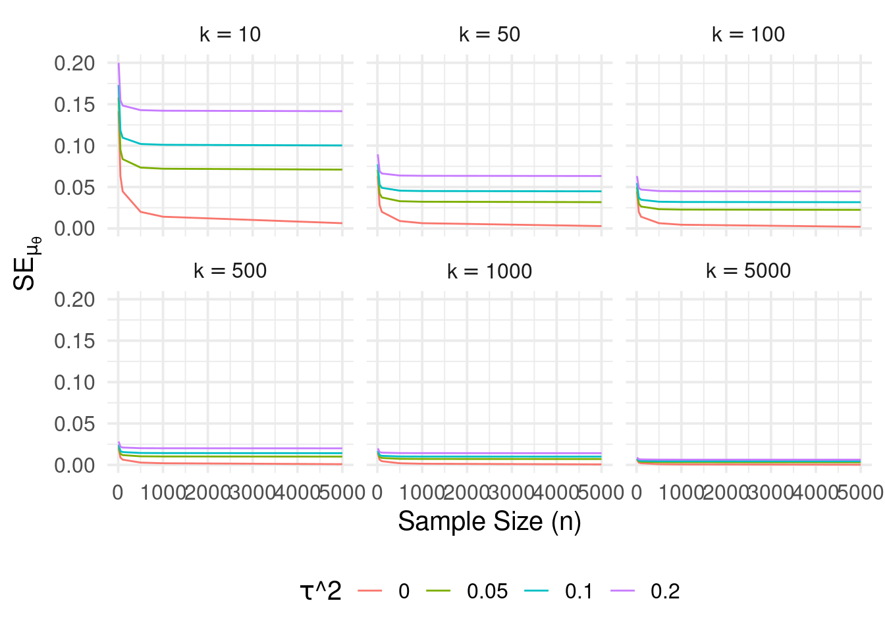
11.36 Prediction intervals (PI)
We could say that the CI is not completely taking into account the between-study heterogeneity (\(\tau^2\)). After a meta-analysis we would like to know how confident we are in the parameters estimation BUT also what would be the expected effect running a new experiment tomorrow?.
The prediction interval (IntHout et al., 2016; Riley et al., 2011) is exactly the range of effects that I expect in predicting a new study.
11.37 PI for a sample mean
To understand the concept, let’s assume to have a sample \(X\) of size \(n\) and we estimate the mean \(\overline X\). The PI is calculated as5:
\[ PI = \overline X \pm t_{\alpha/2} s_x \sqrt{1 + \frac{1}{n}} \]
Where \(s\) is the sample standard deviation. Basically we are combining the uncertainty in estimating \(\overline X\) (i.e, \(\frac{s_x}{n}\)) with the standard deviation of the data \(s_x\). Compare it with the confidence interval containing only \(\frac{s_x}{n}\).
11.38 PI in meta-analysis
For meta-analysis the equation6 is conceptually similar but with different quantities.
\[ PI = \hat \mu_{\theta} \pm z \sqrt{\tau^2 + SE_{\mu_{\theta}}} \]
Basically we are combining all the sources of uncertainty. As long as \(\tau^2 \neq 0\) the PI is greater than the CI (in the EE model they are the same). Thus even with very precise \(\mu_{\theta}\) estimation, large \(\tau^2\) leads to uncertain predictions.
11.39 PI in meta-analysis
In R the PI can be calculated using predict(). By default the model assume a standard normal distribution thus using \(z\) scores. To use the Riley et al. (2011) approach (\(t\) distribution) the model need to be fitted using test = "t".
k <- 100
dat <- sim_studies(k = k, es = 0.5, tau2 = 0.1, n1 = 30)
fit_z <- rma(yi, vi, data = dat, test = "z") # test = "z" is the default
predict(fit_z) # notice pi.ub/pi.lb vs ci.ub/ci.lb
#>
#> pred se ci.lb ci.ub pi.lb pi.ub
#> 0.4423 0.0424 0.3592 0.5254 -0.2299 1.1145
# manually
fit_z$b[[1]] + qnorm(c(0.025, 0.975)) * sqrt(fit_z$se^2 + fit_z$tau2)
#> [1] -0.229882 1.114516
fit_t <- rma(yi, vi, data = dat, test = "t")
predict(fit_t) # notice pi.ub/pi.lb vs ci.ub/ci.lb
#>
#> pred se ci.lb ci.ub pi.lb pi.ub
#> 0.4423 0.0424 0.3582 0.5265 -0.2382 1.1228
# manually
fit_z$b[[1]] + qt(c(0.025, 0.975), k - 2) * sqrt(fit_t$se^2 + fit_t$tau2)
#> [1] -0.2382858 1.122919812 Meta-analysis as (weighted) linear regression
12.1 MA as (weighted) linear regression
Both the EE and RE model can be seen as standard (weighted) linear regression models. Precisely, there is a difference in fitting a meta-analysis using lm or lme4::lmer() and rma (see https://www.metafor-project.org/doku.php/tips:rma_vs_lm_lme_lmer).
. . .
Beyond these differences a general the EE and RE models are intercept-only linear regressions.
\[ \boldsymbol{Y} = \mathbf{X}\boldsymbol{\beta} + \boldsymbol{\epsilon} \]
The EE model:
\[ y_i = \beta_0 + \epsilon_i \]
The RE model:
\[ y_i = \beta_0 + \beta_{0_i} + \epsilon_i \]
12.2 MA as (weighted) linear regression
In the EE model \(\beta_0\) is \(\theta\) and \(\epsilon_i \sim \mathcal{N}(0, \sigma^2_i)\)
\[ y_i = \beta_0 + \epsilon_i \]
In the RE model \(\beta_0\) is \(\mu_{\theta}\) and \(\beta_{0_i}\) are the \(\delta_i\).
12.3 Explaining \(\tau^2\)
So far we simply assumed \(\tau^2 = 0\) (for the EE model) or estimated it using the RE model.
. . .
We can extend the intercept-only meta-analysis by including study-level predictors (as in standard linear regression) to explain the estimated true heterogeneity.
12.4 Explaining \(\tau^2\)
Let’s make an example where we simulate a meta-analysis with \(k = 100\) studies. Beyond the effect size, we extracted an experimental condition where 50 studies where lab-based experiments \(x_{lab}\) and 50 studies where online experiments.
We assume that there could be a lab effect thus we included a predictor in the model.
12.5 Explaining \(\tau^2\)
Now the model have a predictor \(x\) (the type of experiment) and two parameters \(\beta_0\) and \(\beta_1\). Depending on the contrast coding (default to contr.treatment() in R) the \(\beta_0\) is different. Coding exp as 0 for lab-based experiments and 1 for online experiments:
\[ y_i = \beta_0 + \beta_1X_{1_i} + \epsilon_i \]
\[ y_{\text{lab}_i} = \beta_0 + \epsilon_i \]
\[ y_{\text{online}_i} = \beta_0 + \beta_1 + \epsilon_i \]
12.6 Explaining \(\tau^2\)
What is missing is the random-effect. Basically we still have \(\tau^2\) determining the \(\delta_i \sim \mathcal{N}(0, \tau^2)\) but now is the residual \(\tau^2_r\). The heterogeneity after including the predictor.
\[ y_i = \beta_0 + \beta_{0_i} + \beta_1X_{1_i} + \epsilon_i \tag{12.1}\]
\[ \beta_{0_i} \sim \mathcal{N}(0, \tau^2_r) \]
Clearly the difference between \(\tau^2\) (the total heterogeneity) and \(\tau^2_r\) (residual heterogeneity) is an index of the impact of \(X\).
12.7 Simulating the \(X\) effect
To simulate a meta-regression we just need to choose the parameters values (\(\beta_0\) and \(\beta_1\)) and implement Equation 12.1. Using treatment coding, \(\beta_0\) is the effect size when \(X = 0\) (i.e., lab-based experiments) and \(\beta_1\) is the difference between lab and online experiments.
b0 <- 0.3 # lab-based effect size
b1 <- 0.5 # online - lab-based --> online = b0 + b1
exp_dummy <- ifelse(exp == "lab", 0, 1) # dummy version
es <- b0 + b1 * exp_dummy
ht(data.frame(exp, exp_dummy, es))
#> exp exp_dummy es
#> 1 lab 0 0.3
#> 2 lab 0 0.3
#> 3 lab 0 0.3
#> 4 lab 0 0.3
#> 5 lab 0 0.3
#> 95 online 1 0.8
#> 96 online 1 0.8
#> 97 online 1 0.8
#> 98 online 1 0.8
#> 99 online 1 0.8
#> 100 online 1 0.812.8 Simulating the \(X\) effects
Now we can use the sim_studies() function as usual. The difference is that es is no longer a single value but a vector (with different values according to the \(X\) level) and tau2 is \(\tau^2_r\) (this the leftover heterogeneity after including the \(X\) effect)
tau2r <- 0.05 # residual heterogeneity
dat <- sim_studies(k = k, es = es, tau2 = tau2r, n1 = n, add = list(exp = exp))
ht(dat)
#>
#> id yi vi n1 n2 exp
#> 1 1 0.3868 0.0634 40 40 lab
#> 2 2 0.7162 0.0620 40 40 lab
#> 3 3 -0.0864 0.0601 36 36 lab
#> 4 4 0.0536 0.0516 40 40 lab
#> 5 5 0.2547 0.0573 34 34 lab
#> 95 95 1.4493 0.0530 31 31 online
#> 96 96 0.9304 0.0527 41 41 online
#> 97 97 1.0688 0.0420 47 47 online
#> 98 98 0.6288 0.0511 38 38 online
#> 99 99 1.2018 0.0462 41 41 online
#> 100 100 0.6452 0.0702 29 29 online12.9 Fitting a meta-regression Model
To fit a meta-regression we still use the metafor::rma() function, adding the mods = ~ parameter with the model formula (same as the right-hand side of a y ~ x call in lm). The name of the predictor in the formula need to match a column of the data = dataframe.
fit <- rma(yi, vi, mods = ~ exp, data = dat, method = "REML")
summary(fit)
#>
#> Mixed-Effects Model (k = 100; tau^2 estimator: REML)
#>
#> logLik deviance AIC BIC AICc
#> -30.6576 61.3152 67.3152 75.0701 67.5706
#>
#> tau^2 (estimated amount of residual heterogeneity): 0.0610 (SE = 0.0158)
#> tau (square root of estimated tau^2 value): 0.2471
#> I^2 (residual heterogeneity / unaccounted variability): 55.34%
#> H^2 (unaccounted variability / sampling variability): 2.24
#> R^2 (amount of heterogeneity accounted for): 48.11%
#>
#> Test for Residual Heterogeneity:
#> QE(df = 98) = 220.5886, p-val < .0001
#>
#> Test of Moderators (coefficient 2):
#> QM(df = 1) = 53.2544, p-val < .0001
#>
#> Model Results:
#>
#> estimate se zval pval ci.lb ci.ub
#> intrcpt 0.3301 0.0472 6.9990 <.0001 0.2377 0.4226 ***
#> exponline 0.4871 0.0667 7.2976 <.0001 0.3563 0.6179 ***
#>
#> ---
#> Signif. codes: 0 '***' 0.001 '**' 0.01 '*' 0.05 '.' 0.1 ' ' 112.10 Intepreting a meta-regression Model
The output is similar to the RE model with few additions:
- Everything related to the heterogeneity (\(H^2\), \(I^2\), \(Q\), etc.) is now about residual heterogeneity
- There is the (pseudo) \(R^2\)
- There is an overall test for the moderators \(Q_M\)
- There is a section (similar to standard regression models) with the estimated parameters, standard error and Wald test
12.11 Model parameters
intrcpt and exponline are the estimates of \(\beta_0\) and \(\beta_1\). The interpretation depends on the scale of the effect size and the contrast coding.
We can plot the model results using the metafor::regplot()7.
regplot(fit)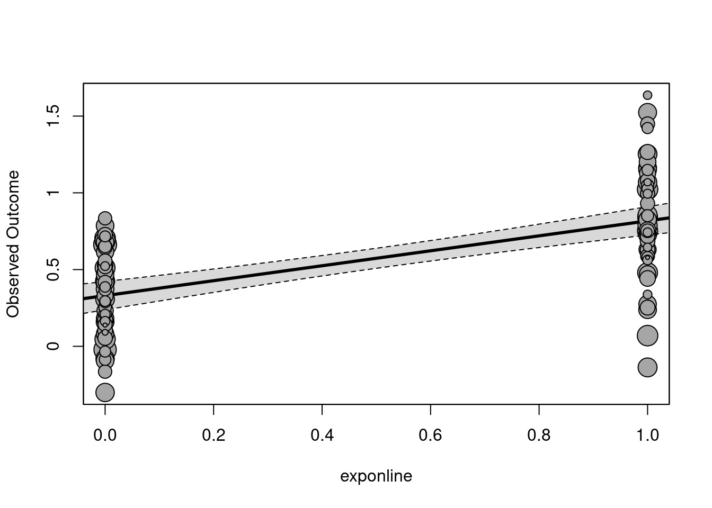
12.12 Omnibus Moderator Test
The Test of Moderators section report the so-called omnibus test for model coeffiecients. Is a simultaneous test for 1 or more coefficients where \(H_0: \beta_j = 0\).
In this case, coefficient 2 means that we are testing only the 2nd coefficient \(\beta_1\). By default, the intercept is ignored. In fact, the exponline line and the omnibus test are the same (the \(\chi^2\) is just the \(z^2\))
#> Test of Moderators (coefficient 2):
#> QM(df = 1) = 53.2544, p-val < .0001
#> estimate se zval pval ci.lb ci.ub
#> intrcpt 0.3301 0.0472 6.9990 <.0001 0.2377 0.4226 ***
#> exponline 0.4871 0.0667 7.2976 <.0001 0.3563 0.6179 ***12.13 General Linear Hypotheses Testing (GLHT)
We can also test any combination of parameters. For example we could test if lab-based experiments and online experiments are both different from 0. This is the same as fitting a model without the intercept8 thus estimating the cell means (see Schad et al., 2020).
# now we are testing two coefficients
fit_no_int <- rma(yi, vi, mods = ~ 0 + exp, data = dat)12.14 General Linear Hypotheses Testing (GLHT)
fit_no_int
#>
#> Mixed-Effects Model (k = 100; tau^2 estimator: REML)
#>
#> tau^2 (estimated amount of residual heterogeneity): 0.0610 (SE = 0.0158)
#> tau (square root of estimated tau^2 value): 0.2471
#> I^2 (residual heterogeneity / unaccounted variability): 55.34%
#> H^2 (unaccounted variability / sampling variability): 2.24
#>
#> Test for Residual Heterogeneity:
#> QE(df = 98) = 220.5886, p-val < .0001
#>
#> Test of Moderators (coefficients 1:2):
#> QM(df = 2) = 348.4548, p-val < .0001
#>
#> Model Results:
#>
#> estimate se zval pval ci.lb ci.ub
#> explab 0.3301 0.0472 6.9990 <.0001 0.2377 0.4226 ***
#> exponline 0.8172 0.0472 17.3052 <.0001 0.7247 0.9098 ***
#>
#> ---
#> Signif. codes: 0 '***' 0.001 '**' 0.01 '*' 0.05 '.' 0.1 ' ' 112.15 General Linear Hypotheses Testing (GLHT)
A more elegant way is by using the GLHT framework. Basically we provide a contrast matrix expressing linear combinations of model parameters to be tested. In our case \(\text{lab} = \beta_0 = 0\) and \(\text{online} = \beta_0 + \beta_1 = 0\).
Practically, the matrix formulation is the following:
\[ \begin{pmatrix} 1 & 0 \\ 1 & 1 \end{pmatrix} \begin{pmatrix} \beta_0\\ \beta_1 \end{pmatrix} = \begin{pmatrix} 0\\ 0 \end{pmatrix} \]
In R:
12.16 General Linear Hypotheses Testing (GLHT)
We can use the anova() function providing the model and the hypothesis matrix.
anova(fit) # the default
#>
#> Test of Moderators (coefficient 2):
#> QM(df = 1) = 53.2544, p-val < .0001
anova(fit, X = C)
#>
#> Hypotheses:
#> 1: intrcpt = 0
#> 2: intrcpt + exponline = 0
#>
#> Results:
#> estimate se zval pval
#> 1: 0.3301 0.0472 6.9990 <.0001
#> 2: 0.8172 0.0472 17.3052 <.0001
#>
#> Omnibus Test of Hypotheses:
#> QM(df = 2) = 348.4548, p-val < .0001Notice that is the same as the model without the intercept.
12.17 Likelihood Ratio Test (LRT)
As in standard regression modelling, we can also compare models using LRT. The anova() function will compute the LRT when two (nested) models are provided. In this case we compared a null (intercept-only) model with the model including the predictor.
# the null model
fit0 <- rma(yi, vi, data = dat, method = "REML")
anova(fit0, fit, refit = TRUE) # refit = TRUE because LRT with REML is not meaningful, using ML instead
#>
#> df AIC BIC AICc logLik LRT pval QE tau^2
#> Full 3 66.5817 74.3972 66.8317 -30.2908 220.5886 0.0589
#> Reduced 2 108.5228 113.7331 108.6465 -52.2614 43.9411 <.0001 336.6655 0.1160
#> R^2
#> Full
#> Reduced 49.2018%12.18 \(R^2\)
The \(R^2\) value reported in the model output is not calculated as in standard regression analysis.
\[ R^2 = 1 - \frac{\tau^2_r}{\tau^2} \]
Basically is the percentage of heterogeneity reduction from the intercept-only model to the model including predictors.
In R:
(1 - fit$tau2/fit0$tau2)*100
#> [1] 48.1096
fit$R2
#> [1] 48.109612.19 \(R^2\)
Despite useful, the \(R^2\) has some limitations:
- López-López et al. (2014) showed that precise estimations require a large number of studies \(k\)
- Sometimes could results in negative values (usually truncated to zero)
- Depends on the \(\tau^2\) estimator
More about \(R^2\) and limitations can be found:
12.20 Numerical predictor
The same logic of simulating a meta-regression can be applied to numerical predictors. We still have \(\beta_0\) and \(\beta_1\) but \(X\) has more levels. Let’s simulate an impact of the average participants’ age on the effect size.
- \(\beta_0\) is the effect size when age is zero
-
\(\beta_1\) is the expected increase in the effect size for a unit increase in
age
How we can choose plausible values for the parameters and parametrize the model correctly?
12.21 Parametrize \(\beta_0\)
The intepretation (and the inference) of \(\beta_0\) is strongly dependent on the type of numerical predictor. An age of zero is (probably) empirically meaningless thus the \(\beta_0\) is somehow not useful.
We can for example mean-center (or other type of centering procedure) moving the zero on a meaningful value.
age <- 10:50 # the raw vector
age0 <- age - mean(age) # centering on the mean
age20 <- age - min(age) # centering on the minimum
ht(data.frame(age, age0, age20))
#> age age0 age20
#> 1 10 -20 0
#> 2 11 -19 1
#> 3 12 -18 2
#> 4 13 -17 3
#> 5 14 -16 4
#> 36 45 15 35
#> 37 46 16 36
#> 38 47 17 37
#> 39 48 18 38
#> 40 49 19 39
#> 41 50 20 4012.22 Parametrize \(\beta_0\)
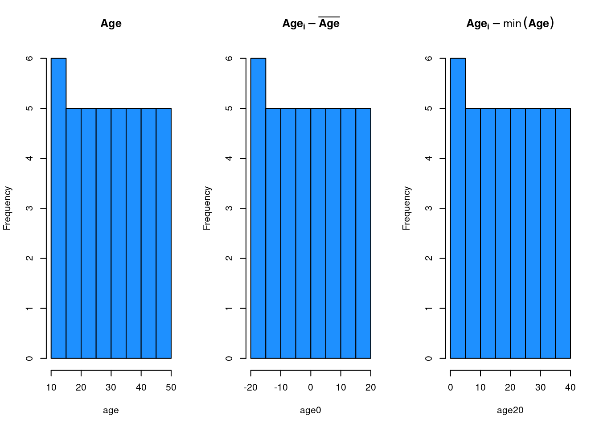
12.23 Parametrize \(\beta_0\)
Using different parametrizations will only affect the estimation (and the interpretation) of \(\beta_0\). Other parameters and indexes will be the same.
k <- 100
b0 <- 0.2 # effect size when age 0
b1 <- 0.05 # slope (random for now)
age <- round(runif(k, 20, 50)) # sampling from uniform distribution
tau2r <- 0.05
n <- 10 + rpois(k, 30 - 10)
es <- b0 + b1 * age # raw
age0 <- age - mean(age)
age20 <- age - 20
dat <- sim_studies(k = k, es = es, tau2 = tau2r, n1 = n, add = list(age = age, age0 = age0, age20 = age20))
fit <- rma(yi, vi, mods = ~ age, data = dat)
fit0 <- rma(yi, vi, mods = ~ age0, data = dat)
fit20 <- rma(yi, vi, mods = ~ age20, data = dat)
# showing the intercept
compare_rma(fit, fit0, fit20, extra_params = "R2") |>
round(3)
#> fit: rma(yi = yi, vi = vi, mods = ~age, data = dat)
#> fit0: rma(yi = yi, vi = vi, mods = ~age0, data = dat)
#> fit20: rma(yi = yi, vi = vi, mods = ~age20, data = dat)
#> fit fit0 fit20
#> b (intrcpt) 0.371 2.026 1.290
#> se 0.153 0.036 0.076
#> zval 2.427 56.591 17.076
#> pval 0.015 0.000 0.000
#> ci.lb 0.071 1.956 1.142
#> ci.ub 0.671 2.096 1.438
#> R2 71.443 71.443 71.443
#> I2 49.486 49.486 49.486
#> tau2 0.063 0.063 0.063
# showing the intercept
compare_rma(fit, fit0, fit20, b = "age", extra_params = "R2") |>
round(3)
#> fit: rma(yi = yi, vi = vi, mods = ~age, data = dat)
#> fit0: rma(yi = yi, vi = vi, mods = ~age0, data = dat)
#> fit20: rma(yi = yi, vi = vi, mods = ~age20, data = dat)
#> fit fit0 fit20
#> b (age) 0.046 0.046 0.046
#> se 0.004 0.004 0.004
#> zval 11.152 11.152 11.152
#> pval 0.000 0.000 0.000
#> ci.lb 0.038 0.038 0.038
#> ci.ub 0.054 0.054 0.054
#> R2 71.443 71.443 71.443
#> I2 49.486 49.486 49.486
#> tau2 0.063 0.063 0.06312.24 Choosing \(\beta_1\)
The core of the model is \(\beta_1\) that is the age effect. Compared to the categorical case where \(\beta_1\) is just the standardized difference between two conditions, with numerical \(X\) choosing a meaningful \(\beta_1\) is more challenging.
Two (maybe more) strategies:
- simulating a lot of effects sizes fixing \(beta_0\) and \(\beta_1\) and see the expected range of \(y_i\)
- fixing a certain \(R^2\) and choose the \(\beta_1\) producing that \(R^2\)
- …
12.25 \(\beta_1\) by simulations
A strategy could be to simulate from the generative model a large number of studies and see the expected range of effect size (Gelman et al., 2020, Chapter 5 and p. 97). A large number of unplausible values suggest that the chosen \(\beta_1\) is probably not appropriate.
k <- 1e3
n <- 30
tau2 <- 0
x <- runif(k, 20, 50) # age
b0 <- 0.1
b1 <- c(0.001, 0.05, 0.2)
esl <- lapply(b1, function(b) b0 + b*x)
datl <- lapply(esl, function(es) sim_studies(k = k, es = es, tau2 = tau2, n1 = n, add = list(x = x)))
names(datl) <- b1
dat <- dplyr::bind_rows(datl, .id = "b1")
ht(dat)
#>
#> b1 id yi vi n1 n2 x
#> 1 0.001 1 -0.0234 0.0649 30 30 36.66325
#> 2 0.001 2 -0.2818 0.0528 30 30 37.59875
#> 3 0.001 3 -0.1208 0.0969 30 30 37.89483
#> 4 0.001 4 0.3004 0.0509 30 30 24.06663
#> 5 0.001 5 -0.1076 0.0560 30 30 22.65956
#> 2995 0.2 995 8.9069 0.0616 30 30 43.62926
#> 2996 0.2 996 4.6568 0.0618 30 30 21.95671
#> 2997 0.2 997 5.9464 0.0631 30 30 30.73639
#> 2998 0.2 998 6.6676 0.0712 30 30 31.20466
#> 2999 0.2 999 9.8789 0.0994 30 30 48.16696
#> 3000 0.2 1000 5.7442 0.0702 30 30 28.7151512.26 \(\beta_1\) by simulations
Clearly given the limited range of the \(x\) variable (age) some \(\beta_1\) values are implausible leading to effect sizes that are out of a meaningful empirical range.
12.27 Fixing \(R^2\)
We can use the approach by López-López et al. (2014) where predictors \(x\) are sampled from a standard normal distribution (or standardized). \(\beta_1\) is calculated as \(\beta_1 = \sqrt{\tau^2 R^2}\) and the residual heterogeneity as \(\tau^2_r = \tau^2 - \beta^2_1\).
k <- 100
n <- 30
tau2 <- 0.3
R2 <- 0.4
b0 <- 0.1
b1_2 <- tau2 * R2
b1 <- sqrt(b1_2)
tau2r <- tau2 - b1_212.28 Fixing \(R^2\)
We can check the simulation approach:
k <- 1e3
1 - tau2r/tau2
#> [1] 0.4
x <- rnorm(k)
es <- b0 + b1 * x
dat <- sim_studies(k, es, tau2r, n1 = 1e3, add = list(x = x))
fit <- rma(yi, vi, data = dat, mods = ~x)
summary(fit)
#>
#> Mixed-Effects Model (k = 1000; tau^2 estimator: REML)
#>
#> logLik deviance AIC BIC AICc
#> -562.0096 1124.0193 1130.0193 1144.7365 1130.0434
#>
#> tau^2 (estimated amount of residual heterogeneity): 0.1786 (SE = 0.0081)
#> tau (square root of estimated tau^2 value): 0.4226
#> I^2 (residual heterogeneity / unaccounted variability): 98.89%
#> H^2 (unaccounted variability / sampling variability): 90.40
#> R^2 (amount of heterogeneity accounted for): 43.09%
#>
#> Test for Residual Heterogeneity:
#> QE(df = 998) = 90168.4129, p-val < .0001
#>
#> Test of Moderators (coefficient 2):
#> QM(df = 1) = 749.0935, p-val < .0001
#>
#> Model Results:
#>
#> estimate se zval pval ci.lb ci.ub
#> intrcpt 0.0830 0.0134 6.1759 <.0001 0.0567 0.1094 ***
#> x 0.3628 0.0133 27.3696 <.0001 0.3368 0.3888 ***
#>
#> ---
#> Signif. codes: 0 '***' 0.001 '**' 0.01 '*' 0.05 '.' 0.1 ' ' 112.29 \(R^2\) using simulations
The results from López-López et al. (2014) (and also our previous simulation) suggested that we need a large number of studies for precise \(R^2\) estimations. Let’s check using simulations the sampling distribution of \(R^2\) using a plausible meta-analysis scenario.
k <- 40 # number of studies
n <- 10 + rpois(k, 40 - 10) # sample size
tau2 <- 0.05 # tau ~ 0.22
R2 <- 0.3
b0 <- 0.1
b1_2 <- tau2 * R2
b1 <- sqrt(b1_2)
tau2r <- tau2 - b1_2
nsim <- 1e3
R2i <- rep(NA, nsim)
for(i in 1:nsim){
x <- rnorm(k)
dat <- sim_studies(k = k, es = b0 + b1*x, tau2 = tau2r, n1 = n, add = list(x))
fit <- rma(yi, vi, data = dat, mods = ~x)
R2i[i] <- fit$R2
}12.30 \(R^2\) using simulations
We estimated the true \(R^2\) correctly but there is a lot of uncertainty with a plausible meta-analysis scenario. There are a lot of meta-analysis also with lower \(k\) worsening the results.
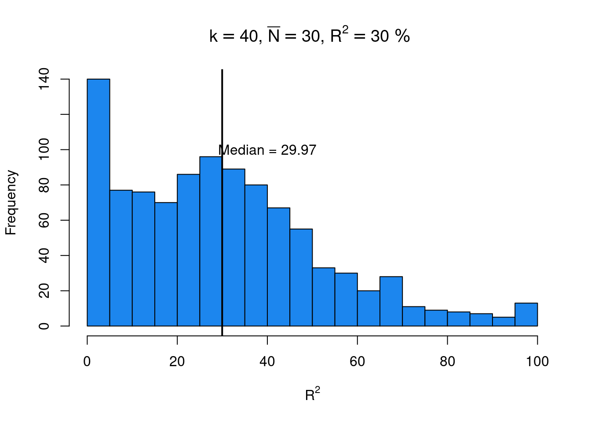
13 Publication Bias (PB)
14 What do you think about PB? What do you know? Causes? Remedies?
14.1 Publication Bias (PB)
The PB is a very critical most problematic aspects of meta-analysis. Essentially the probability of publishing a paper (~and thus including into the meta-analysis) is not the same regardless of the result.
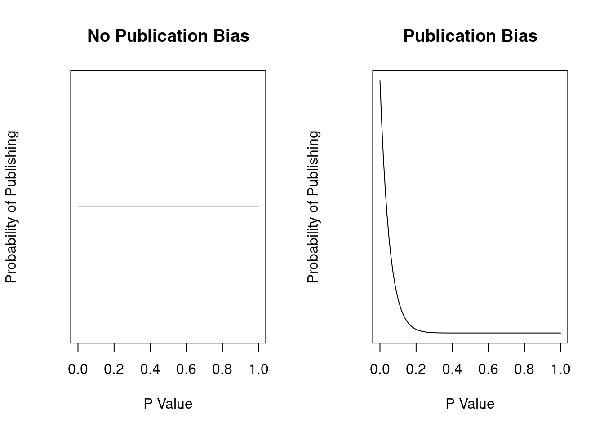
14.2 Publication Bias Disclaimer!
We cannot (completely) solve the PB using statistical tools. The PB is a problem related to the publishing process and publishing incentives
. . .
- pre-registrations, multi-lab studies, etc. can (almost) completely solve the problem filling the literature with unbiased studies
. . .
- there are statistical tools to detect, estimate and correct for the publication bias. As every statistical method, they are influenced by statistical assumptions, number of studies and sample size, heterogeneity, etc.
14.3 Publication Bias (PB) - The Big Picture9

14.4 PB under an EE model
The easiest way to understand the PB is by simulating what happen without the PB. Let’s simulate a lot of studies (under a EE model) keeping all the results without selection (the ideal world).
set.seed(2023)
k <- 1e3
n <- round(runif(k, 10, 100))
theta <- 0.3
dat <- sim_studies(k = k, es = theta, tau2 = 0, n1 = n)
dat <- summary(dat)
# compute 1 tail pvalue
dat$pval1 <- 1 - pnorm(dat$zi)
ht(dat)
#>
#> id yi vi n1 n2 sei zi pval ci.lb ci.ub pval1
#> 1 1 0.3483 0.0406 52 52 0.2015 1.7287 0.0839 -0.0466 0.7431 0.041927744
#> 2 2 0.3762 0.0605 40 40 0.2460 1.5291 0.1262 -0.1060 0.8585 0.063119366
#> 3 3 0.0634 0.0911 25 25 0.3018 0.2101 0.8336 -0.5281 0.6549 0.416800171
#> 4 4 0.4101 0.0487 46 46 0.2206 1.8588 0.0631 -0.0223 0.8426 0.031530757
#> 5 5 -0.0476 0.1160 13 13 0.3405 -0.1398 0.8888 -0.7151 0.6199 0.555581669
#> 995 995 0.3584 0.0950 24 24 0.3083 1.1625 0.2450 -0.2458 0.9625 0.122511729
#> 996 996 0.3939 0.1697 17 17 0.4120 0.9562 0.3390 -0.4135 1.2014 0.169484321
#> 997 997 0.5205 0.0486 35 35 0.2204 2.3610 0.0182 0.0884 0.9525 0.009112230
#> 998 998 0.4206 0.0815 29 29 0.2854 1.4737 0.1406 -0.1388 0.9801 0.070283435
#> 999 999 0.0625 0.0244 83 83 0.1562 0.3999 0.6893 -0.2438 0.3687 0.344631179
#> 1000 1000 0.5547 0.0416 37 37 0.2039 2.7201 0.0065 0.1550 0.9544 0.00326349314.5 PB under an EE model
par(mfrow = c(1, 3))
hist(dat$yi, breaks = 50, col = "dodgerblue", main = "Effect Size")
plot(dat$yi, dat$pval1, pch = 19, col = ifelse(dat$pval1 <= 0.05, scales::alpha("firebrick", 0.5), scales::alpha("black", 0.5)),
main = "P value (one tail) ~ Effect size")
abline(h = 0.05)
plot(dat$yi, dat$pval, pch = 19, col = ifelse(dat$pval <= 0.05, scales::alpha("firebrick", 0.5), scales::alpha("black", 0.5)),
main = "P value (two tails) ~ Effect size")
abline(h = 0.05)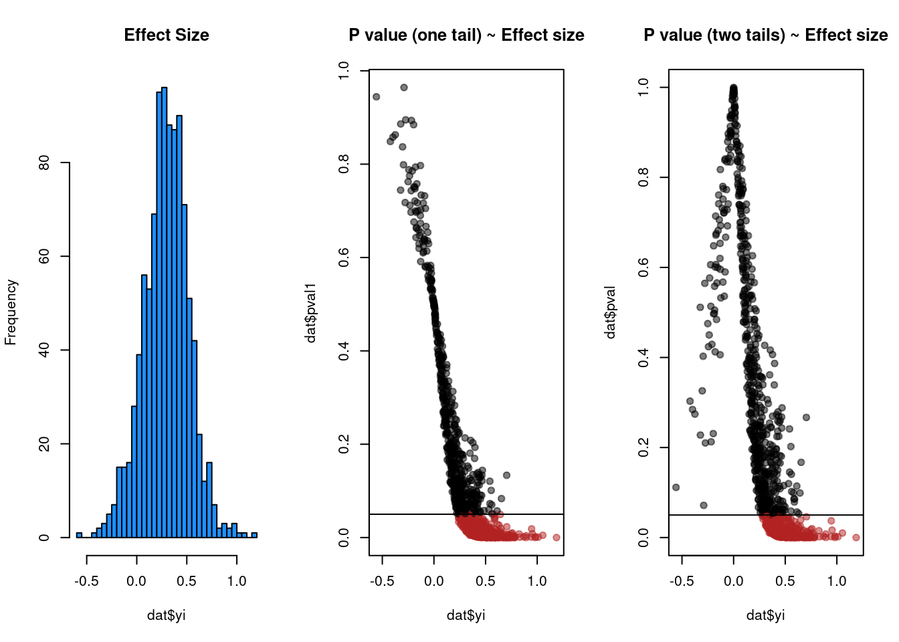
14.6 PB under an EE model
Then, let’s assume that our publishing system is very strict (extreme). You can publish only if \(p \leq 0.05\) on the expected direction. Then the true population of effect sizes will be truncated. Essentially we are assuming that \(P(1|p \leq 0.05) = 1\) and \(P(1|p \leq 0.05) = 0\).
14.7 PB under an EE model
Then, let’s assume that our publishing system is very strict (extreme). You can publish only if \(p \leq 0.05\) on the expected direction. Then the true population of effect sizes will be truncated. Essentially we are assuming that \(P(1|p \leq 0.05) = 1\) and \(P(1|p \leq 0.05) = 0\).
round(compare_rma(fit, fit_pb), 3)
#> fit: rma(yi = yi, vi = vi, data = dat_un, method = "EE")
#> fit_pb: rma(yi = yi, vi = vi, data = dat_pb, method = "EE")
#> fit fit_pb
#> b (intrcpt) 0.289 0.436
#> se 0.009 0.008
#> zval 32.003 51.811
#> pval 0.000 0.000
#> ci.lb 0.271 0.420
#> ci.ub 0.307 0.453
#> I2 0.955 0.000
#> tau2 0.000 0.00014.8 PB under an EE model
The situation is even worse when we simulate a null effect. This strict selection results in committing type-1 error:
set.seed(2023)
k <- 1e3
n <- round(runif(k, 10, 100))
dat0 <- sim_studies(k = k, es = 0, tau2 = 0, n1 = n)
dat0 <- summary(dat0)
# compute 1 tail pvalue
dat0$pval1 <- 1 - pnorm(dat0$zi)
# selecting
sign <- dat0$pval1 <= 0.05 & dat0$zi > 0
dat_pb0 <- dat0[sign, ]
dat_un0 <- dat0[sample(1:nrow(dat0), sum(sign)), ]
# fitting EE model for the full vs selected (ignore k differences)
fit0 <- rma(yi, vi, method = "EE", data = dat_un0)
fit_pb0 <- rma(yi, vi, method = "EE", data = dat_pb0)
round(compare_rma(fit0, fit_pb0), 3)
#> fit0: rma(yi = yi, vi = vi, data = dat_un0, method = "EE")
#> fit_pb0: rma(yi = yi, vi = vi, data = dat_pb0, method = "EE")
#> fit0 fit_pb0
#> b (intrcpt) -0.006 0.363
#> se 0.027 0.026
#> zval -0.220 14.015
#> pval 0.826 0.000
#> ci.lb -0.059 0.312
#> ci.ub 0.047 0.414
#> I2 0.000 0.000
#> tau2 0.000 0.00014.9 PB under an EE model
Assuming to pick a very precise (\(n = 1000\)) and a very unprecise (\(n = 20\)) study, which one is more likely to have an effect size close to the true value?
. . .
The precise study has a lower \(\epsilon_i\) thus is closer to \(\theta\). This relationship create a very insightful visual representation.
. . .
What could be the shape of the plot when plotting the precision (e.g., the sample size or the inverse of the variance) as a function of the effect size?
14.10 PB under an EE model
14.11 Publication Bias (PB) - Funnel Plot
We created a funnel plot. This is a visual tool to check the presence of asymmetry that could be caused by publication bias. If meta-analysis assumptions are respected, and there is no publication bias:
- effects should be normally distributed around the average effect
- more precise studies should be closer to the average effect
- less precise studies could be equally distributed around the average effect
14.12 Publication Bias (PB) - Funnel Plot
The plot assume the typical funnel shape and there are not missing spots on the at the bottom. The presence of missing spots is a potential index of publication bias.
Code
fit <- rma(yi, vi, method = "EE", data = dat)
dat$pb <- dat$pval <= 0.05
with(dat[dat$pb, ],
plot(yi, sei,
ylim = rev(range(dat$sei)),
xlab = latex2exp::TeX("$y_i$"),
ylab = latex2exp::TeX("$\\sqrt{\\sigma_i^2}$"),
xlim = range(dat$yi),
pch = 19,
col = scales::alpha("firebrick", 0.5))
)
with(dat[!dat$pb, ],
points(yi, sei, col = scales::alpha("black", 0.5), pch = 19)
)
abline(v = fit$b[[1]], col = "black", lwd = 1.2)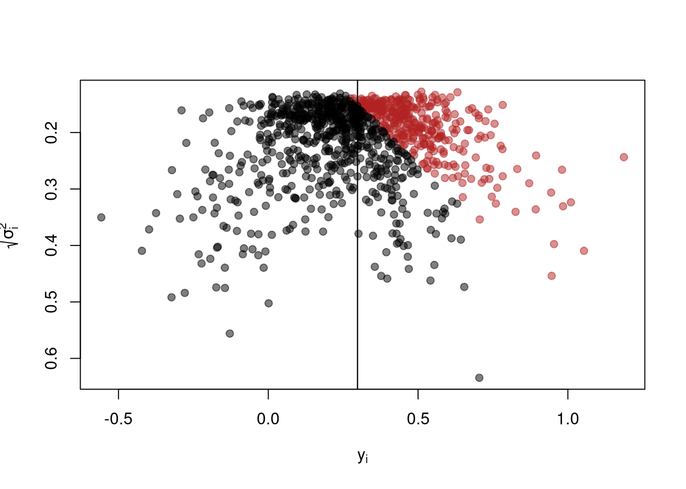
14.13 Publication Bias (PB) - Funnel Plot
The plot assume the typical funnel shape and there are not missing spots on the at the bottom. The presence of missing spots is a potential index of publication bias.
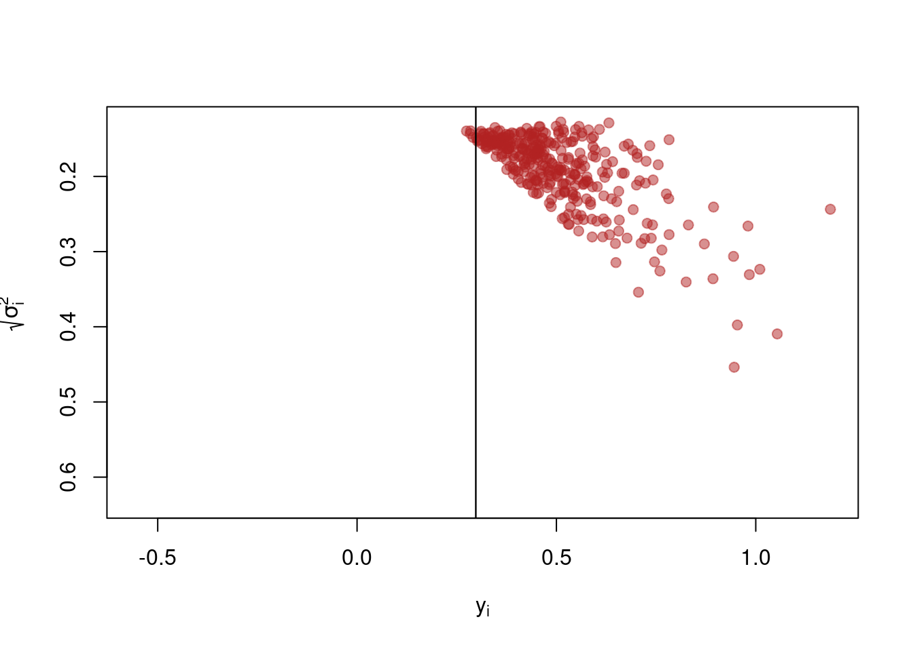
14.14 Robustness to PB - Fail-safe N
The Fail-safe N (Rosenthal, 1979) idea is very simple. Given a meta-analysis with a significant result (i.e., \(p \leq \alpha\)). How many null studies (i.e., \(\hat \theta = 0\)) do I need to obtain \(p > \alpha\)?
metafor::fsn(yi, vi, data = dat)
#>
#> Fail-safe N Calculation Using the Rosenthal Approach
#>
#> Observed Significance Level: <.0001
#> Target Significance Level: 0.05
#>
#> Fail-safe N: 83274114.15 Robustness to PB - Fail-safe N
There are several criticism to the Fail-safe N procedure:
. . .
- is not actually detecting the PB but suggesting the required PB size to remove the effect. A very large N suggest that even with PB, it is unlikely that the results could be completely changed by actually reporting null studies
. . .
- Orwin (1983) proposed a new method calculating the number of studies required to reduce the effect size to a given target
. . .
14.16 Detecting PB - Egger Regression
A basic method to test the funnel plot asymmetry is using an the Egger regression test. Basically we calculate the relationship between \(y_i\) and \(\sqrt{\sigma^2_i}\). In the absence of asimmetry, the line slope should be not different from 0.
We can use the metafor::regtest() function:
egger <- regtest(fit)
egger
#>
#> Regression Test for Funnel Plot Asymmetry
#>
#> Model: fixed-effects meta-regression model
#> Predictor: standard error
#>
#> Test for Funnel Plot Asymmetry: z = -0.3621, p = 0.7173
#> Limit Estimate (as sei -> 0): b = 0.3061 (CI: 0.2601, 0.3520)14.17 Publication Bias (PB) - Egger Regression
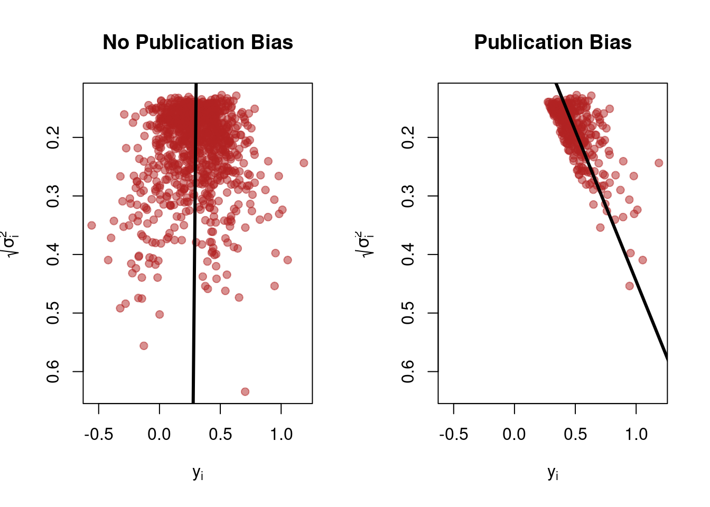
This is a standard (meta) regression thus the number of studies, the precision of each study and heterogeneity influence the reliability (power, type-1 error rate, etc.) of the procedure.
14.18 Correcting PB - Trim and Fill
The Trim and Fill method (Duval & Tweedie, 2000) is used to impute the hypothetical missing studies according to the funnel plot and recomputing the meta-analysis effect. Shi and Lin (Shi & Lin, 2019) provide an updated overview of the method with some criticisms.
. . .
14.19 Correcting PB - Trim and Fill
Now we can use the metafor::trimfill() function:
taf <- metafor::trimfill(fit)
taf
#>
#> Estimated number of missing studies on the left side: 15 (SE = 5.4670)
#>
#> Random-Effects Model (k = 84; tau^2 estimator: REML)
#>
#> tau^2 (estimated amount of total heterogeneity): 0.0562 (SE = 0.0146)
#> tau (square root of estimated tau^2 value): 0.2371
#> I^2 (total heterogeneity / total variability): 61.61%
#> H^2 (total variability / sampling variability): 2.60
#>
#> Test for Heterogeneity:
#> Q(df = 83) = 210.3501, p-val < .0001
#>
#> Model Results:
#>
#> estimate se zval pval ci.lb ci.ub
#> 0.5934 0.0339 17.5084 <.0001 0.5270 0.6598 ***
#>
#> ---
#> Signif. codes: 0 '***' 0.001 '**' 0.01 '*' 0.05 '.' 0.1 ' ' 1The trim-and-fill estimates that 15 are missing. The new effect size after including the studies is reduced and closer to the simulated value (but in this case still significant).
14.20 Correcting PB - Trim and Fill
We can also visualize the funnel plot highligting the points that are included by the method.
funnel(taf)Code
funnel(taf)
egg <- regtest(fit)
egg_npb <- regtest(taf)
se <- seq(0,1.8,length=100)
lines(coef(egg$fit)[1] + coef(egg$fit)[2]*se, se, lwd=3, col = "black")
lines(coef(egg_npb$fit)[1] + coef(egg_npb$fit)[2]*se, se, lwd=3, col = "firebrick")
legend("topleft", legend = c("Original", "Corrected"), fill = c("black", "firebrick"))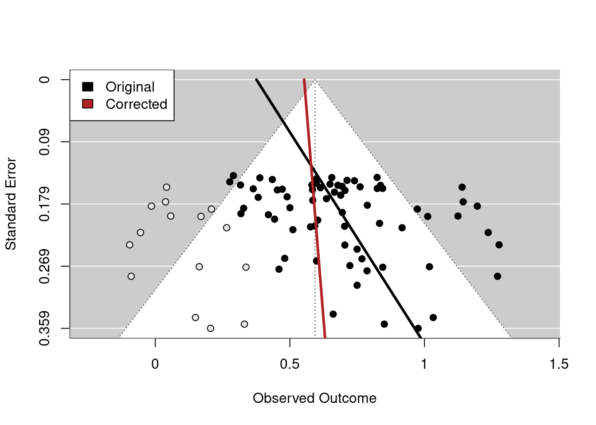
14.21 Why the funnel plot can be misleading?
This funnel plot show an evident asymmetry on the left side. Is there evidence of publication bias? What do you think?
14.22 Why the funnel plot can be misleading?
The data are of course simulated and this is the code. What do you think now?
14.23 Why the funnel plot can be misleading?
In fact, these are two unbiased population of effect sizes. Extra source of heterogeneity could create asymmetry not related to PB.
14.24 Why the funnel plot can be misleading?
Also the methods to detect/correct for PB are committing a false alarm:
regtest(fit)
#>
#> Regression Test for Funnel Plot Asymmetry
#>
#> Model: mixed-effects meta-regression model
#> Predictor: standard error
#>
#> Test for Funnel Plot Asymmetry: z = 6.2569, p < .0001
#> Limit Estimate (as sei -> 0): b = -0.2067 (CI: -0.3460, -0.0675)14.25 Why the funnel plot can be misleading?
Also the methods to detect/correct for PB are committing a false alarm:
trimfill(fit)
#>
#> Estimated number of missing studies on the left side: 32 (SE = 6.3553)
#>
#> Random-Effects Model (k = 132; tau^2 estimator: REML)
#>
#> tau^2 (estimated amount of total heterogeneity): 0.2183 (SE = 0.0337)
#> tau (square root of estimated tau^2 value): 0.4672
#> I^2 (total heterogeneity / total variability): 86.77%
#> H^2 (total variability / sampling variability): 7.56
#>
#> Test for Heterogeneity:
#> Q(df = 131) = 639.7238, p-val < .0001
#>
#> Model Results:
#>
#> estimate se zval pval ci.lb ci.ub
#> 0.0281 0.0457 0.6142 0.5391 -0.0615 0.1177
#>
#> ---
#> Signif. codes: 0 '***' 0.001 '**' 0.01 '*' 0.05 '.' 0.1 ' ' 114.26 Why the funnel plot can be misleading?
The regtest can be applied also with moderators. The idea should be to take into account the moderators effects and then check for asymmetry.
fitm <- rma(yi, vi, mods = ~x, data = dat)
regtest(fitm)
#>
#> Regression Test for Funnel Plot Asymmetry
#>
#> Model: mixed-effects meta-regression model
#> Predictor: standard error
#>
#> Test for Funnel Plot Asymmetry: z = -1.0277, p = 0.304114.27 Why the funnel plot can be misleading?
In fact, the funnel plot on the raw dataset and on residuals looks quite different because the asymmetry was caused by the moderator.
14.28 Correcting PB - Selection Models (SM)
SM are more than a tool for correcting for the PB. SM are formal models of PB that can help us understanding and simulating the PB.
The SM are composed by two parts:
-
Effect size model: the unbiased data generation process. In our case basically the
sim_studies()function. - Selection model: the assumed process generating the biased selection of effect sizes
Selection models can be based on the p-value (e.g., p-curve or p-uniform) and/or the effect size and variance (Copas model). We will see only models based on the p-value.
14.29 Correcting PB - Selection Models (SM)
Formally, the random-effect meta-analysis probability density function (PDF) can be written as (e.g., Citkowicz & Vevea, 2017):
\[ f\left(y_i \mid \beta, \tau^2 ; \sigma_i^2\right)=\frac{\phi\left(\frac{y_i-\Delta_i}{\sqrt{\sigma_i^2+\tau^2}}\right)}{\int_{-\infty}^{\infty} \phi\left(\frac{Y_i-\Delta_i}{\sqrt{\sigma_i^2+\tau^2}}\right) d y_i} \]
Without going into details, this is the PDF without any selection process (i.e., the effect sizes model).
14.30 Correcting PB - Selection Models (SM)
If we have a function linking the p-value with the probability of publishing (a weight function) \(w(p_i)\) we can include it in the previous PDF, creating a weighted PDF.
\[ f\left(y_i \mid \beta, \tau^2 ; \sigma_i^2\right)=\frac{\mathrm{w}\left(p_i\right) \phi\left(\frac{y_i-\Delta_i}{\sqrt{\sigma_i^2+\tau^2}}\right)}{\int_{-\infty}^{\infty} \mathrm{w}\left(p_i\right) \phi\left(\frac{Y_i-\Delta_i}{\sqrt{\sigma_i^2+\tau^2}}\right)d y_i} \]
Essentially, this new model take into account the selection process (the weight function) to estimate a new meta-analysis. In case of no selection (all weigths are the same) the model is the standard random-effects meta-analysis.
14.31 SM - Weigth function
The weigth function is a simple function that links the p-value with the probability of publishing. The simple example at the beginning (publishing only significant p-values) is a step weigth function.
14.32 SM - Weigth function
We can add more steps to express a more complex selection process:
14.33 SM - Weigth function
Or we can draw a smooth function assuming certain parameters:
wbeta <- function(p, a = 1, b = 1) p^(a - 1) * (1 - p)^(b - 1)
pval <- seq(0, 1, 0.01)
plot(pval, wbeta(pval, 1, 1), type = "l", ylim = c(0, 1), col = 1, lwd = 2,
xlab = "p value", ylab = "Probability of Publishing")
lines(pval, wbeta(pval, 1, 2), col = 2, lwd = 2)
lines(pval, wbeta(pval, 1, 5), col = 3, lwd = 2)
lines(pval, wbeta(pval, 1, 50), col = 4, lwd = 2)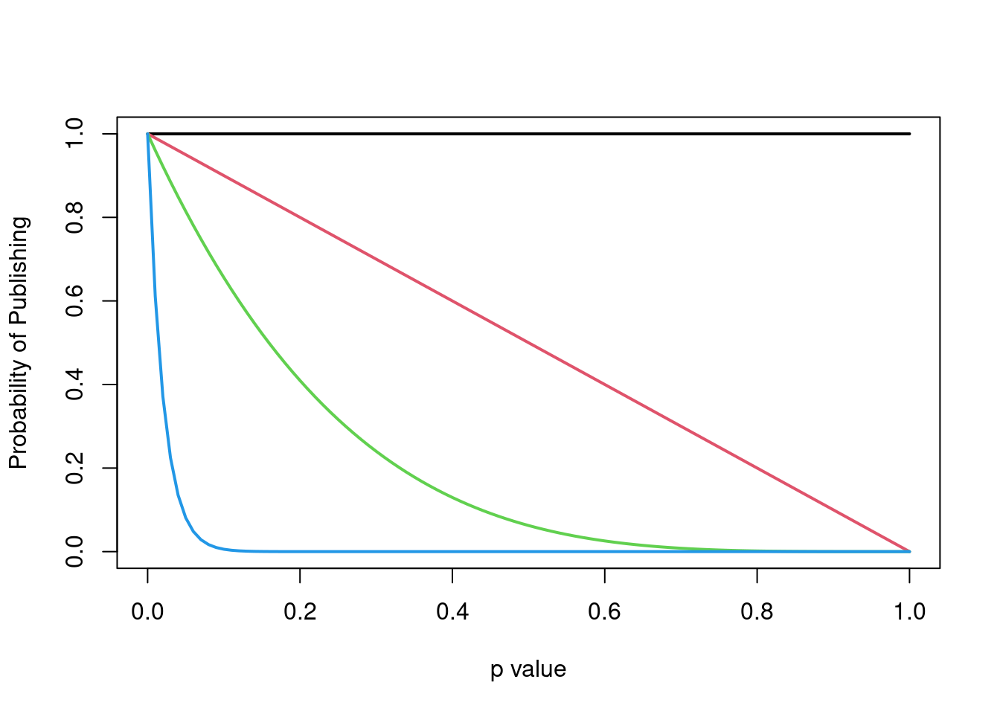
14.34 SM - Weigth function
Whatever the function, the SM estimate the parameters of the function and the meta-analysis parameters taking into account the weigths.
Clearly, in the presence of no bias the two models (with and without weights) are the same while with PB the estimation is different, probably reducing the effect size.
If the SM is correct (not possible in reality), the SM estimate the true effect even in the presence of bias. This is the strenght and elegance of the SM.
14.35 SM - Weigth functions
There are several weight functions:
- the step model
- the negative-exponential model
- the beta model
- …
For an overview see the metafor documentation https://wviechtb.github.io/metafor/reference/selmodel.html
14.36 SM - Step model
The step model approximate the selection process with thresholds \(\alpha\) and the associated weight \(w(p_i)\). For example:
steps <- c(0.005, 0.01, 0.05, 0.10, 0.25, 0.35, 0.50, 0.65, 0.75, 0.90, 0.95, 0.99, 0.995, 1)
moderate_pb <- c(1, 0.99, 0.95, 0.80, 0.75, 0.65, 0.60, 0.55, 0.50, 0.50, 0.50, 0.50, 0.50, 0.50)
severe_pb <- c(1, 0.99, 0.90, 0.75, 0.60, 0.50, 0.40, 0.35, 0.30, 0.25, 0.10, 0.10, 0.10, 0.10)
par(mfrow = c(1, 2))
plot(steps, moderate_pb, type = "s", xlab = "p value", ylab = "Probability of Selection", main = "Moderate PB", ylim = c(0, 1))
abline(v = steps, col = "grey")
plot(steps, severe_pb, type = "s", xlab = "p value", ylab = "Probability of Selection", main = "Severe PB", ylim = c(0, 1))
abline(v = steps, col = "grey")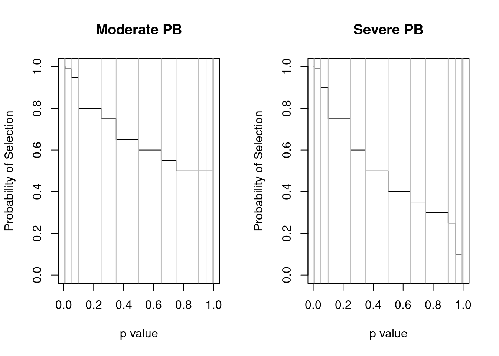
14.37 SM - Negative-Exponential
The Negative-Exponential model is very simple and intuitive. The weight function is \(e^{-\delta p_i}\) thus the single parameter \(\delta\) is the amount of bias. When \(\delta = 0\) there is no bias.
wnegexp <- function(p, delta){
exp((-delta)*p)
}curve(wnegexp(x, 0), ylim = c(0, 1), col = 1, lwd = 2, xlab = "p value", ylab = "Probability of Selection")
curve(wnegexp(x, 1), add = TRUE, col = 2, lwd = 2)
curve(wnegexp(x, 5), add = TRUE, col = 3, lwd = 2)
curve(wnegexp(x, 30), add = TRUE, col = 4, lwd = 2)
legend("topright", legend = latex2exp::TeX(sprintf("$\\delta = %s$", c(1, 2, 3, 4))), fill = 1:4)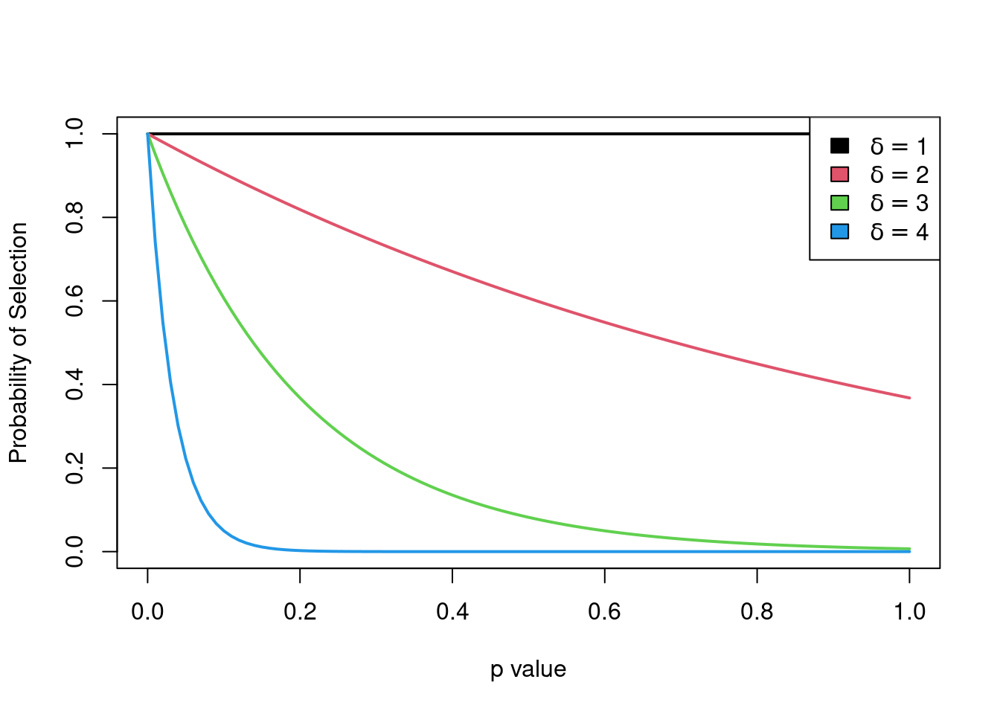
14.38 Simulating data with PB
The strategy to simulate biased data is to sample from the sim_studies() function but to keep the studies using a probabilistic sampling based on the weight function.
set.seed(2024)
k <- 500 # high number to check the results
es <- 0 # H0 true
tau2 <- 0.1
delta <- 5
dat <- vector(mode = "list", k)
i <- 1
while(i <= k){
# generate data
n <- runif(1, 10, 100)
d <- summary(sim_studies(1, es, tau2, n))
# get one-tail p-value
pi <- 1 - pnorm(d$zi)
# get wi
wpi <- wnegexp(pi, delta)
keep <- rbinom(1, 1, wpi) == 1
if(keep){
dat[[i]] <- d
i <- i + 1
}
}
dat <- do.call(rbind, dat)
fit <- rma(yi, vi, data = dat)14.39 Simulating data with PB
Let’s see some plots:
14.40 Simulating data with PB
Let’s see the model result:
fit <- rma(yi, vi, data = dat)14.41 Simulating data with PB
Let’s see the Egger regression test and the trim-and-fill procedure:
regtest(fit)
#>
#> Regression Test for Funnel Plot Asymmetry
#>
#> Model: mixed-effects meta-regression model
#> Predictor: standard error
#>
#> Test for Funnel Plot Asymmetry: z = 4.4739, p < .0001
#> Limit Estimate (as sei -> 0): b = 0.2017 (CI: 0.1235, 0.2799)
trimfill(fit)
#>
#> Estimated number of missing studies on the left side: 106 (SE = 14.6182)
#>
#> Random-Effects Model (k = 606; tau^2 estimator: REML)
#>
#> tau^2 (estimated amount of total heterogeneity): 0.0474 (SE = 0.0049)
#> tau (square root of estimated tau^2 value): 0.2176
#> I^2 (total heterogeneity / total variability): 56.94%
#> H^2 (total variability / sampling variability): 2.32
#>
#> Test for Heterogeneity:
#> Q(df = 605) = 1399.3991, p-val < .0001
#>
#> Model Results:
#>
#> estimate se zval pval ci.lb ci.ub
#> 0.2927 0.0121 24.1497 <.0001 0.2689 0.3164 ***
#>
#> ---
#> Signif. codes: 0 '***' 0.001 '**' 0.01 '*' 0.05 '.' 0.1 ' ' 114.42 Simulating data with PB
The two methods are detecting the PB but not correcting it appropriately. Let’s see the SM using a negexp method:
sel <- selmodel(fit, type = "negexp", alternative = "greater")
sel
#>
#> Random-Effects Model (k = 500; tau^2 estimator: ML)
#>
#> tau^2 (estimated amount of total heterogeneity): 0.0800 (SE = 0.0118)
#> tau (square root of estimated tau^2 value): 0.2828
#>
#> Test for Heterogeneity:
#> LRT(df = 1) = 115.9867, p-val < .0001
#>
#> Model Results:
#>
#> estimate se zval pval ci.lb ci.ub
#> 0.0519 0.0381 1.3609 0.1735 -0.0228 0.1266
#>
#> Test for Selection Model Parameters:
#> LRT(df = 1) = 46.6783, p-val < .0001
#>
#> Selection Model Results:
#>
#> estimate se zval pval ci.lb ci.ub
#> 4.7526 0.3818 12.4494 <.0001 4.0044 5.5008 ***
#>
#> ---
#> Signif. codes: 0 '***' 0.001 '**' 0.01 '*' 0.05 '.' 0.1 ' ' 114.43 Simulating data with PB
We can also plot the results:
plot(sel)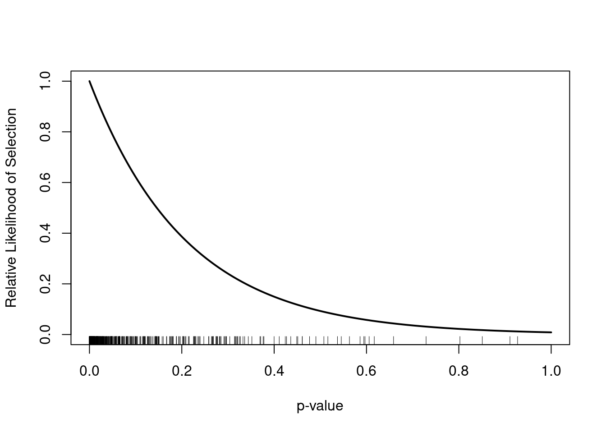
14.44 PB Sensitivity analysis
- The SM is correctly detecting, estimating and correcting the PB. But we simulated a pretty strong bias with \(k = 500\) studies. In reality meta-analyses have few studies.
- Vevea & Woods (2005) proposed to fix the weight function parameters to certain values representing different degree of selection and check how the model changes.
- If the model parameters are affected after taking into account the SM, this could be considered as an index of PB.
- This approach is really interesting in general but especially when \(k\) is too small for estimating the SM
- see
?selmodelfor information about performing sensitivity analysis with pre-specified weight functions
14.45 More on SM and Publication Bias
- The SM documentation of
metafor::selmodel()https://wviechtb.github.io/metafor/reference/selmodel.html - Wolfgang Viechtbauer overview of PB https://www.youtube.com/watch?v=ucmOCuyCk-c
- Harrer et al. (2021) - Doing Meta-analysis in R - Chapter 9
- McShane et al. (2016) for a nice introduction about publication bias and SM
- Another good overview by Jin et al. (2015)
- See also Guan & Vandekerckhove (2016), Maier et al. (2023) and Bartoš et al. (2022) for Bayesian approaches to PB
14.46 References
Anderson, S. F., & Kelley, K. (2024). Sample size planning for
replication studies: The devil is in the design. Psychological
Methods, 29, 844–867. https://doi.org/10.1037/met0000520
Barba, L. A. (2018). Terminologies for reproducible research. arXiv
[Cs.DL], arXiv:1802.03311. http://arxiv.org/abs/1802.03311
Bartoš, F., Maier, M., Quintana, D. S., & Wagenmakers, E.-J. (2022).
Adjusting for publication bias in JASP and r: Selection models,
PET-PEESE, and robust bayesian meta-analysis. Advances in Methods
and Practices in Psychological Science, 5,
251524592211092. https://doi.org/10.1177/25152459221109259
Borenstein, M., Hedges, L. V., Higgins, J. P. T., & Rothstein, H. R.
(2009). Introduction to Meta-Analysis. https://doi.org/10.1002/9780470743386
Broman, K., Cetinkaya-Rundel, M., Nussbaum, A., Paciorek, C., Peng, R.,
Turek, D., & Wickham, H. (2017, January 18). Recommendations to
funding agencies for supporting reproducible research. https://www.amstat.org/asa/files/pdfs/POL-ReproducibleResearchRecommendations.pdf
Bushman, B. J., & Wang, M. C. (2009). Vote-counting procedures in
meta-analysis. In The handbook of research synthesis and
meta-analysis (pp. 207–220). Russell Sage Foundation.
Citkowicz, M., & Vevea, J. L. (2017). A parsimonious weight function
for modeling publication bias. Psychological Methods,
22, 28–41. https://doi.org/10.1037/met0000119
Clark, T. S., & Linzer, D. A. (2015). Should i use fixed or random
effects? Political Science Research and Methods, 3,
399–408. https://doi.org/10.1017/psrm.2014.32
Collaboration, O. S., & Open Science Collaboration. (2015).
Estimating the reproducibility of psychological science. In
Science (Vol. 349). https://doi.org/10.1126/science.aac4716
Crandall, C. S., & Sherman, J. W. (2016). On the scientific
superiority of conceptual replications for scientific progress.
Journal of Experimental Social Psychology, 66, 93–99.
https://doi.org/10.1016/j.jesp.2015.10.002
Cronbach, L. J., & Shapiro, K. (1982). Designing evaluations of
educational and social programs. https://eduq.info/xmlui/handle/11515/9106
Duval, S., & Tweedie, R. (2000). Trim and fill: A simple
funnel-plot-based method of testing and adjusting for publication bias
in meta-analysis. Biometrics, 56, 455–463. https://doi.org/10.1111/j.0006-341x.2000.00455.x
Gelman, A., & Carlin, J. (2014). Beyond power calculations. In
Perspectives on Psychological Science (Vol. 9, pp. 641–651). https://doi.org/10.1177/1745691614551642
Gelman, A., Hill, J., & Vehtari, A. (2020). Regression and other
stories. Cambridge University Press. https://doi.org/10.1017/9781139161879
Goeman, J. J., Solari, A., & Stijnen, T. (2010). Three-sided
hypothesis testing: Simultaneous testing of superiority, equivalence and
inferiority. Statistics in Medicine, 29, 2117–2125. https://doi.org/10.1002/sim.4002
Gollwitzer, M., & Schwabe, J. (2022). Context dependency as a
predictor of replicability. Review of General Psychology: Journal of
Division 1, of the American Psychological Association, 26,
241–249. https://doi.org/10.1177/10892680211015635
Goodman, S. N., Fanelli, D., & Ioannidis, J. P. A. (2016). What does
research reproducibility mean? Science Translational Medicine,
8, 341ps12. https://doi.org/10.1126/scitranslmed.aaf5027
Guan, M., & Vandekerckhove, J. (2016). A bayesian approach to
mitigation of publication bias. Psychonomic Bulletin &
Review, 23, 74–86. https://doi.org/10.3758/s13423-015-0868-6
Harrer, M., Cuijpers, P., Furukawa, T., & Ebert, D. (2021).
Doing meta-analysis with r: A hands-on guide (1st ed.). CRC
Press.
Harrington, D., D’Agostino, R. B., Sr, Gatsonis, C., Hogan, J. W.,
Hunter, D. J., Normand, S.-L. T., Drazen, J. M., & Hamel, M. B.
(2019). New guidelines for statistical reporting in the journal. The
New England Journal of Medicine, 381, 285–286. https://doi.org/10.1056/NEJMe1906559
Hedges, L. V. (1989). An unbiased correction for sampling error in
validity generalization studies. The Journal of Applied
Psychology, 74, 469–477. https://doi.org/10.1037/0021-9010.74.3.469
Hedges, L. V., & Olkin, I. (1980). Vote-counting methods in research
synthesis. Psychological Bulletin, 88, 359–369. https://doi.org/10.1037/0033-2909.88.2.359
Hedges, L. V., & Schauer, J. M. (2019a). Consistency of effects is
important in replication: Rejoinder to mathur and VanderWeele (2019).
Psychological Methods, 24, 576–577. https://doi.org/10.1037/met0000237
Hedges, L. V., & Schauer, J. M. (2019b). More than one replication
study is needed for unambiguous tests of replication. Journal of
Educational and Behavioral Statistics: A Quarterly Publication Sponsored
by the American Educational Research Association and the American
Statistical Association, 44, 543–570. https://doi.org/10.3102/1076998619852953
Hedges, L. V., & Schauer, J. M. (2019c). Statistical analyses for
studying replication: Meta-analytic perspectives. Psychological
Methods, 24, 557–570. https://doi.org/10.1037/met0000189
Hedges, L. V., & Schauer, J. M. (2021). The design of replication
studies. Journal of the Royal Statistical Society. Series A,
(Statistics in Society), 184, 868–886. https://doi.org/10.1111/rssa.12688
Heller, R., Bogomolov, M., & Benjamini, Y. (2014). Deciding whether
follow-up studies have replicated findings in a preliminary large-scale
omics study. Proceedings of the National Academy of Sciences of the
United States of America, 111, 16262–16267. https://doi.org/10.1073/pnas.1314814111
Heyard, R., Pawel, S., Frese, J., Voelkl, B., Würbel, H., McCann, S.,
Held, L., Wever, K. E., Hartmann, H., Townsin, L., & Zellers, S.
(2024). A scoping review on metrics to quantify reproducibility: A
multitude of questions leads to a multitude of metrics. https://scholar.google.com/citations?view_op=view_citation&hl=en&citation_for_view=JAb7P1QAAAAJ:ldfaerwXgEUC
Higgins, J. P. T., & Thompson, S. G. (2002). Quantifying
heterogeneity in a meta-analysis. Statistics in Medicine,
21, 1539–1558. https://doi.org/10.1002/sim.1186
Inbar, Y. (2016). Association between contextual dependence and
replicability in psychology may be spurious. Proceedings of the
National Academy of Sciences of the United States of America,
113, E4933–4. https://doi.org/10.1073/pnas.1608676113
IntHout, J., Ioannidis, J. P. A., Rovers, M. M., & Goeman, J. J.
(2016). Plea for routinely presenting prediction intervals in
meta-analysis. BMJ Open, 6, e010247. https://doi.org/10.1136/bmjopen-2015-010247
Ioannidis, J. P. A. (2005). Why most published research findings are
false. PLoS Medicine, 2, e124. https://doi.org/10.1371/journal.pmed.0020124
Jager, L. R., & Leek, J. T. (2014). An estimate of the science-wise
false discovery rate and application to the top medical literature.
Biostatistics, 15, 1–12. https://academic.oup.com/biostatistics/article-abstract/15/1/1/244509
Jin, Z.-C., Zhou, X.-H., & He, J. (2015). Statistical methods for
dealing with publication bias in meta-analysis. Statistics in
Medicine, 34, 343–360. https://doi.org/10.1002/sim.6342
Kenett, R. S., & Shmueli, G. (2015). Clarifying the terminology that
describes scientific reproducibility. Nature Methods,
12, 699. https://doi.org/10.1038/nmeth.3489
Kruschke, J. K. (2015). Bayesian approaches to testing a point
(“null”) hypothesis. In Doing bayesian data
analysis (pp. 335–358). Elsevier. https://doi.org/10.1016/b978-0-12-405888-0.00012-x
Kruschke, J. K., & Liddell, T. M. (2018). The bayesian new
statistics: Hypothesis testing, estimation, meta-analysis, and power
analysis from a bayesian perspective. Psychonomic Bulletin &
Review, 25, 178–206. https://doi.org/10.3758/s13423-016-1221-4
Lakens, D., Scheel, A. M., & Isager, P. M. (2018). Equivalence
testing for psychological research: A tutorial. Advances in Methods
and Practices in Psychological Science, 1, 259–269. https://doi.org/10.1177/2515245918770963
Lindley, D. V. (1972). Bayesian statistics a review. In Bayesian
statistics (pp. 1–74). https://doi.org/10.1137/1.9781611970654.ch1
López-López, J. A., Marín-Martínez, F., Sánchez-Meca, J., Van den
Noortgate, W., & Viechtbauer, W. (2014). Estimation of the
predictive power of the model in mixed-effects meta-regression: A
simulation study. The British Journal of Mathematical and
Statistical Psychology, 67, 30–48. https://doi.org/10.1111/bmsp.12002
Ly, A., Etz, A., Marsman, M., & Wagenmakers, E.-J. (2019).
Replication bayes factors from evidence updating. Behavior Research
Methods, 51, 2498–2508. https://doi.org/10.3758/s13428-018-1092-x
Machery, E. (2020). What is a replication? Philosophy of
Science, 87, 545–567. https://doi.org/10.1086/709701
Maier, M., Bartoš, F., & Wagenmakers, E.-J. (2023). Robust bayesian
meta-analysis: Addressing publication bias with model-averaging.
Psychological Methods, 28, 107–122. https://doi.org/10.1037/met0000405
Mathur, M. B., & VanderWeele, T. J. (2019). Challenges and
suggestions for defining replication "success" when effects may be
heterogeneous: Comment on hedges and schauer (2019). Psychological
Methods, 24, 571–575. https://doi.org/10.1037/met0000223
Mathur, M. B., & VanderWeele, T. J. (2020). New statistical metrics
for multisite replication projects. Journal of the Royal Statistical
Society. Series A, (Statistics in Society), 183,
1145–1166. https://doi.org/10.1111/rssa.12572
McShane, B. B., Böckenholt, U., & Hansen, K. T. (2016). Adjusting
for publication bias in meta-analysis: An evaluation of selection
methods and some cautionary notes: An evaluation of selection methods
and some cautionary notes. Perspectives on Psychological Science: A
Journal of the Association for Psychological Science, 11,
730–749. https://doi.org/10.1177/1745691616662243
Miller, J. (2009). What is the probability of replicating a
statistically significant effect? Psychonomic Bulletin &
Review, 16, 617–640. https://doi.org/10.3758/PBR.16.4.617
National Academies of Sciences, Engineering, and Medicine, Policy and
Global Affairs, Committee on Science, Engineering, Medicine, and Public
Policy, Board on Research Data and Information, Division on Engineering
and Physical Sciences, Committee on Applied and Theoretical Statistics,
Board on Mathematical Sciences and Analytics, Division on Earth and Life
Studies, Nuclear and Radiation Studies Board, & Division of
Behavioral and Social Sciences and Education. (2019).
Reproducibility and replicability in science. National
Academies Press. https://doi.org/10.17226/25303
Nosek, B. A., & Errington, T. M. (2017). Making sense of
replications. eLife, 6, e23383. https://doi.org/10.7554/eLife.23383
Nosek, B. A., & Errington, T. M. (2020). What is replication?
PLoS Biology, 18, e3000691. https://doi.org/10.1371/journal.pbio.3000691
Orwin, R. G. (1983). A fail-SafeN for effect size in meta-analysis.
Journal of Educational Statistics, 8, 157–159. https://doi.org/10.3102/10769986008002157
Parmigiani, G. (2023). Defining replicability of prediction rules.
Statistical Science: A Review Journal of the Institute of
Mathematical Statistics, 38. https://doi.org/10.1214/23-sts891
Pawel, S., & Held, L. (2020). Probabilistic forecasting of
replication studies. PloS One, 15, e0231416. https://doi.org/10.1371/journal.pone.0231416
Perugini, M., Gallucci, M., & Costantini, G. (2014). Safeguard power
as a protection against imprecise power estimates. Perspectives on
Psychological Science: A Journal of the Association for Psychological
Science, 9, 319–332. https://doi.org/10.1177/1745691614528519
Riley, R. D., Higgins, J. P. T., & Deeks, J. J. (2011).
Interpretation of random effects meta-analyses. BMJ,
342, d549. https://doi.org/10.1136/bmj.d549
Rosenberg, M. S. (2005). The file-drawer problem revisited: A general
weighted method for calculating fail-safe numbers in meta-analysis.
Evolution; International Journal of Organic Evolution,
59, 464–468. https://doi.org/10.1111/j.0014-3820.2005.tb01004.x
Rosenthal, R. (1979). The file drawer problem and tolerance for null
results. Psychological Bulletin, 86, 638–641. https://doi.org/10.1037/0033-2909.86.3.638
Rosenthal, R. (1990). Replication in behavioral research. Journal of
Social Behavior and Personality. https://search.proquest.com/openview/5ccc3a267139968c18c0d7ce1a1c09f6/1?pq-origsite=gscholar&cbl=1819046
Rouder, J. N., Speckman, P. L., Sun, D., Morey, R. D., & Iverson, G.
(2009). Bayesian t tests for accepting and rejecting the null
hypothesis. Psychonomic Bulletin & Review, 16,
225–237. https://doi.org/10.3758/PBR.16.2.225
Schad, D. J., Vasishth, S., Hohenstein, S., & Kliegl, R. (2020). How
to capitalize on a priori contrasts in linear (mixed) models: A
tutorial. Journal of Memory and Language, 110, 104038.
https://doi.org/10.1016/j.jml.2019.104038
Schauer, J. M. (2022). Replicability and meta-analysis. In W. O’Donohue,
A. Masuda, & S. Lilienfeld (Eds.), Avoiding questionable
research practices in applied psychology (pp. 301–342). Springer
International Publishing. https://doi.org/10.1007/978-3-031-04968-2_14
Schauer, J. M., & Hedges, L. V. (2020). Assessing heterogeneity and
power in replications of psychological experiments. Psychological
Bulletin, 146, 701–719. https://doi.org/10.1037/bul0000232
Schauer, J. M., & Hedges, L. V. (2021). Reconsidering statistical
methods for assessing replication. Psychological Methods,
26, 127–139. https://doi.org/10.1037/met0000302
Schmidt, F. L., & Hunter, J. E. (2014). Methods of
meta-analysis: Correcting error and bias in research findings (3rd
ed.). SAGE Publications. https://doi.org/10.4135/9781483398105
Shi, L., & Lin, L. (2019). The trim-and-fill method for publication
bias: Practical guidelines and recommendations based on a large database
of meta-analyses: Practical guidelines and recommendations based on a
large database of meta-analyses. Medicine, 98, e15987.
https://doi.org/10.1097/MD.0000000000015987
Simons, D. J. (2014). The value of direct replication. Perspectives
on Psychological Science: A Journal of the Association for Psychological
Science, 9, 76–80. https://doi.org/10.1177/1745691613514755
Simonsohn, U. (2015). Small telescopes: Detectability and the evaluation
of replication results: Detectability and the evaluation of replication
results. Psychological Science, 26, 559–569. https://doi.org/10.1177/0956797614567341
Stan Development Team. (2021). Stan: A c++ library for probability
and sampling, version 2.26.0. https://mc-stan.org/
Steiger, J. H. (2004). Beyond the f test: Effect size confidence
intervals and tests of close fit in the analysis of variance and
contrast analysis. Psychological Methods, 9, 164–182.
https://doi.org/10.1037/1082-989X.9.2.164
Tal, E. (2020). Measurement in science. Metaphysics Research
Lab, Stanford University. https://plato.stanford.edu/archives/fall2020/entries/measurement-science/
Ulrich, R., & Miller, J. (2020). Questionable research practices may
have little effect on replicability. eLife, 9, e58237.
https://doi.org/10.7554/eLife.58237
Valentine, J. C., Biglan, A., Boruch, R. F., Castro, F. G., Collins, L.
M., Flay, B. R., Kellam, S., Mościcki, E. K., & Schinke, S. P.
(2011). Replication in prevention science. Prevention Science: The
Official Journal of the Society for Prevention Research,
12, 103–117. https://doi.org/10.1007/s11121-011-0217-6
Van Bavel, J. J., Mende-Siedlecki, P., Brady, W. J., & Reinero, D.
A. (2016). Contextual sensitivity in scientific reproducibility.
Proceedings of the National Academy of Sciences of the United States
of America, 113, 6454–6459. https://doi.org/10.1073/pnas.1521897113
Verhagen, J., & Wagenmakers, E.-J. (2014). Bayesian tests to
quantify the result of a replication attempt. Journal of
Experimental Psychology. General, 143, 1457–1475. https://doi.org/10.1037/a0036731
Veroniki, A. A., Jackson, D., Viechtbauer, W., Bender, R., Bowden, J.,
Knapp, G., Kuss, O., Higgins, J. P. T., Langan, D., & Salanti, G.
(2016). Methods to estimate the between-study variance and its
uncertainty in meta-analysis. Research Synthesis Methods,
7, 55–79. https://doi.org/10.1002/jrsm.1164
Vevea, J. L., & Woods, C. M. (2005). Publication bias in research
synthesis: Sensitivity analysis using a priori weight functions.
Psychological Methods, 10, 428–443. https://doi.org/10.1037/1082-989X.10.4.428
Viechtbauer, W. (2005). Bias and efficiency of meta-analytic variance
estimators in the random-effects model. Journal of Educational and
Behavioral Statistics: A Quarterly Publication Sponsored by the American
Educational Research Association and the American Statistical
Association, 30, 261–293. https://doi.org/10.3102/10769986030003261
Wagenmakers, E.-J., Lodewyckx, T., Kuriyal, H., & Grasman, R.
(2010). Bayesian hypothesis testing for psychologists: A tutorial on the
savage–dickey method. Cognitive Psychology, 60,
158–189. https://doi.org/10.1016/j.cogpsych.2009.12.001
Wasserstein, R. L., & Lazar, N. A. (2016). The ASA statement on
p-values: Context, process, and purpose. The American
Statistician, 70, 129–133. https://doi.org/10.1080/00031305.2016.1154108
Williams, D. R., Rast, P., & Bürkner, P.-. C. (2018). Bayesian
meta-analysis with weakly informative prior distributions.
PsyArXiv. https://doi.org/10.31234/osf.io/7tbrm
Wilson, B. M., & Wixted, J. T. (2018). The prior odds of testing a
true effect in cognitive and social psychology. Advances in Methods
and Practices in Psychological Science, 1, 186–197. https://doi.org/10.1177/2515245918767122
Yarkoni, T. (2020). The generalizability crisis. The Behavioral and
Brain Sciences, 45, e1. https://doi.org/10.1017/S0140525X20001685
There is a confusion about the fixed-effects vs fixed-effect (no s) and equal-effects models. See https://wviechtb.github.io/metafor/reference/misc-models.html↩︎
The
filor::compare_rma()function is similar to thecar::compareCoefs()function↩︎See Harrer et al. (2021) (Chapter 5) and Hedges & Schauer (2019) for an overview about the Q statistics↩︎
see https://www.meta-analysis-workshops.com/download/common-mistakes1.pdf↩︎
Notice that the equation, in particular the usage of \(t\) vs \(z\) depends on assuming \(s_x\) to be known or estimated. See https://online.stat.psu.edu/stat501/lesson/3/3.3, https://en.wikipedia.org/wiki/Prediction_interval and https://www.bryanshalloway.com/2021/03/18/intuition-on-uncertainty-of-predictions-introduction-to-prediction-intervals/↩︎
When a \(t\) distribution is assumed, the quantiles are calculated using \(k - 2\) degrees of freedom↩︎
The functions is made for numerical variables thus is less appropriate for categorical variables↩︎
see https://www.metafor-project.org/doku.php/tips:models_with_or_without_intercept on removing the intercept↩︎
Thanks to the Wolfgang Viechtbauer’s course https://www.wvbauer.com/doku.php/course_ma↩︎